<!doctype html>
<html lang="en">
<head>
  <meta charset="utf-8">
  <meta name="viewport" content="width=device-width, initial-scale=1">
  <title>arxiv digest — 2026-08-21</title>
  <style>
:root {
  --bg: #ffffff;
  --fg: #1f2328;
  --muted: #59636e;
  --border: #d0d7de;
  --card: #f6f8fa;
  --link: #0969da;
}
body {
  max-width: 980px;
  margin: 0 auto;
  padding: 2rem 1rem 5rem;
  font-family: -apple-system, BlinkMacSystemFont, "Segoe UI", Helvetica, Arial, sans-serif;
  line-height: 1.55;
  color: var(--fg);
  background: var(--bg);
}
a { color: var(--link); }
img { max-width: 100%; height: auto; }
pre, code { background: var(--card); border-radius: 6px; }
pre { padding: 1rem; overflow-x: auto; }
blockquote { border-left: 4px solid var(--border); padding-left: 1rem; color: var(--muted); }
details { margin: 0.6rem 0; }
summary { cursor: pointer; font-weight: 600; }
.paper-figures-scroll {
  display: flex;
  gap: 1rem;
  overflow-x: auto;
  overscroll-behavior-x: contain;
  padding: 0.75rem 0.25rem 1rem;
  margin: 1rem 0 1.25rem;
  border-top: 1px solid var(--border);
  border-bottom: 1px solid var(--border);
  scroll-snap-type: x proximity;
}
.paper-figure-card {
  flex: 0 0 min(260px, 72vw);
  scroll-snap-align: start;
  background: var(--card);
  border: 1px solid var(--border);
  border-radius: 12px;
  padding: 0.55rem;
}
.paper-figure-card img {
  display: block;
  width: 100%;
  max-height: 240px;
  object-fit: contain;
  background: white;
  border-radius: 8px;
}
.paper-figure-caption {
  display: block;
  margin-top: 0.5rem;
  color: var(--muted);
  font-size: 0.85rem;
}
.figure-strip-hint {
  color: var(--muted);
  font-size: 0.9rem;
  margin-bottom: -0.3rem;
}
</style>
  <!-- MathJax: renders $...$ inline math and $$...$$ display math, plus
       \(...\) and \[...\]. Loaded from the official CDN; works offline
       once cached. Configured to skip code/pre blocks so arxiv IDs that
       look like dollar amounts don't get mangled. -->
  <script>
    window.MathJax = {
      tex: {
        inlineMath: [['$', '$'], ['\\(', '\\)']],
        displayMath: [['$$', '$$'], ['\\[', '\\]']],
        processEscapes: true,
        processEnvironments: true
      },
      options: {
        skipHtmlTags: ['script', 'noscript', 'style', 'textarea', 'pre', 'code'],
        ignoreHtmlClass: 'tex2jax_ignore',
        processHtmlClass: 'tex2jax_process'
      }
    };
  </script>
  <script id="MathJax-script" async
    src="https://cdn.jsdelivr.net/npm/mathjax@3/es5/tex-chtml.js"></script>
</head>
<body>
<header style="background-color: #333; color: white; padding: 15px; margin-bottom: 20px;">
  <h1 style="margin: 0; font-size: 24px;">
    <a href="https://ochelpan.github.io/arXiv_clean/" style="color: white; text-decoration: none;">Main</a>
  </h1>
</header>

<h1>Daily arXiv Report</h1>

<hr>
<p>
<a href="index.html">← Index</a>
 · <a href="papers_03.html">← Previous</a> · <a href="papers_05.html">Next →</a>
</p>
<hr>

<h2>Papers 61–80</h2>
<p><a id="paper-2608.19028"></a></p>
<h3 id="sign-problem-resilient-singular-value-probe-in-determinant-quantum-monte-carlo"><a href="http://arxiv.org/abs/2608.19028v1">Sign-problem-resilient singular-value probe in determinant quantum Monte Carlo</a></h3>
<p><strong>Authors:</strong> Wen Chen, Rubem Mondaini<br>
<strong>Type:</strong> theory · <strong>Category:</strong> strongly correlated electrons · <strong>PDF:</strong> <a href="https://arxiv.org/pdf/2608.19028v1">https://arxiv.org/pdf/2608.19028v1</a><br>
<strong>Analysis basis:</strong> full PDF text, analyzed in chunks
<strong>Topic relevance:</strong> <code>analog quantum simulation</code> <strong>1/5</strong></p>
<div class="figure-strip-hint">↔ Scroll figures horizontally</div>
<div class="paper-figures-scroll">
<figure class="paper-figure-card">
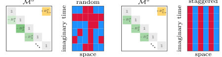
<figcaption class="paper-figure-caption"><b>Fig 1.</b> FIG. 1. Schematic of the models and DQMC space-time fermion matrix Mσ. (a) Honeycomb Hubbard model with t2 = 0 (left) and Haldane-Hubbard model with complex next- nearest-neighbor hopping t2eiϕij (right). Open and filled cir- cles denote the two sublattices, and the arrows specify the phase convention. (b) Sparse block structure of Mσ and aux- iliary fields on the Ns × Lτ space-time lattice. The two fields illustrate a random weak-coupling background and an ideal- ized staggered, τ-uniform strong-coupling limit, respectively.</figcaption>
</figure>
<figure class="paper-figure-card">
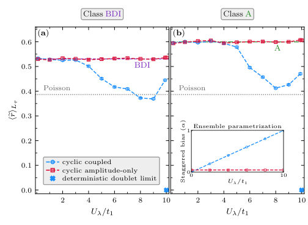
<figcaption class="paper-figure-caption"><b>Fig 2.</b> FIG. 2. Low-lying singular-value statistic ⟨er⟩Lτ for the syn- thetic probability-flip ensembles in (a) class BDI and (b) class A, with L = 6 and Lτ = 80. At each space-time point, the binary field equals the staggered template with proba- bility (1 + α)/2 and its opposite with probability (1 −α)/2. Along the amplitude-only path, α = 0.05 is fixed while Uλ changes only the coupling strength λ(Uλ). Along the cou- pled path, α = Uλ/U⋆, with U⋆/t1 = 10, so the field becomes progressively biased toward the staggered template (inset). Dashed (dash-dotted) horizontal lines denote the BDI (class- A) random-matrix benchmark, and the dotted line marks the Poisson value. At the deterministic endpoint...</figcaption>
</figure>
<figure class="paper-figure-card">
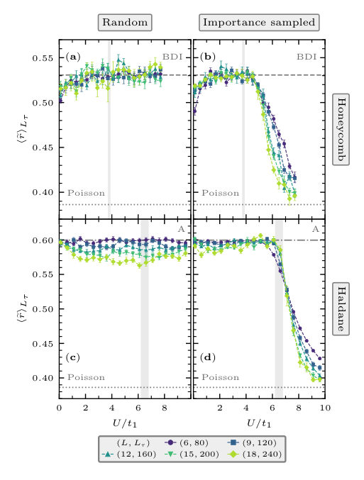
<figcaption class="paper-figure-caption"><b>Fig 3.</b> FIG. 3. Mean adjacent-gap ratio ⟨er⟩Lτ of the low-lying singu- lar values for the two lattice models. The top and bottom rows show the honeycomb Hubbard and Haldane-Hubbard mod- els, respectively. The left column retains each model’s K and λ(U) but uses independent, equiprobable fields xi,τ = ±1 at every space-time point, whereas the right column uses fields generated by DQMC importance sampling. Curves are la- beled by (L, Lτ). Gray bands mark the literature estimates Uc/t1 ∈[3.7, 3.9] for the honeycomb Hubbard model [3, 4, 29] and Uc/t1 ∈[6.2, 6.8] for the Haldane-Hubbard model [31, 32]. Horizontal lines indicate the BDI and class-A random-matrix benchmarks for the top and bottom rows,...</figcaption>
</figure>
<figure class="paper-figure-card">
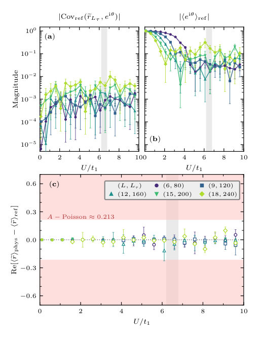
<figcaption class="paper-figure-caption"><b>Fig 4.</b> FIG. 4. Phase-reweighting diagnostics for the Haldane- Hubbard model. (a) Magnitude of the reference-ensemble covariance between the low-lying singular-value statistic and the determinant phase, |Covref(erLτ , eiθ)|. (b) Magnitude of the average phase, |⟨eiθ⟩ref|. (c) Reweighting correction, Re[⟨er⟩Lτ ,phys −⟨er⟩Lτ ,ref]. Error bars in (a,b) denote one standard error; those in (c) are obtained from a synchro- nized chain-block bootstrap. Filled symbols in (c) denote statistically resolved average-phase denominators, whereas open symbols are unresolved and shown only as diagnos- tics. The gray band marks the transition interval U/t1 ∈ [6.2, 6.8] [31, 32]. Red regions in (c) mark corrections...</figcaption>
</figure>
</div>

<p><strong>Summary.</strong> This work introduces the adjacent gap ratio of singular values of the fermion matrix as a robust diagnostic for phase transitions in DQMC simulations. By analyzing Hubbard models, the authors demonstrate that this spectral statistic remains sensitive to underlying physics even when the simulation encounters a sign or phase problem. This establishes a powerful, sign-problem-resilient probe for strongly correlated electron systems.</p>
<p><strong>Why it may be interesting.</strong> The technique provides a powerful, purely spectral diagnostic tool that bypasses the fundamental sign problem inherent in simulating fermionic quantum many-body systems, which is crucial for understanding correlated materials.</p>
<details>
<summary>Detailed structure</summary>
<p><strong>Main problem.</strong> The sign problem limits the use of determinant quantum Monte Carlo (DQMC) for studying strongly correlated fermion systems, necessitating a sign-problem-resilient diagnostic for phase transitions.</p>
<p><strong>Main result.</strong> The adjacent gap ratio of low-lying singular values of the space-time fermion matrix successfully tracks interaction-driven phase transitions in both sign-free and complex-weight Hubbard models, remaining robust against phase reweighting.</p>
<p><strong>Method.</strong> The authors use the adjacent gap ratio of low-lying singular values ($  ext{err}$) of the space-time fermion matrix, derived from the Hubbard-Stratonovich decoupling, as a diagnostic tool.</p>
<p><strong>Model / system.</strong> The study focuses on half-filled honeycomb-lattice Hubbard models, including the sign-free and complex-weight Haldane-Hubbard models, analyzed via DQMC simulations.</p>
<p><strong>Key observables.</strong> Adjacent gap ratio of low-lying singular values ($ ext{err} = \min(\delta_n, \delta_{n+1}) / \max(\delta_n, \delta_{n+1}$)), and the average phase $\langle e^{i	heta} 
angle_{	ext{ref}}$.</p>
<p><strong>Important parameters / regimes.</strong> Interaction strength ($U/t_1$), lattice geometry (honeycomb), and the auxiliary-field coupling strength ($\lambda$).</p>
<p><strong>Assumptions / limitations.</strong> The method relies on the local spectral correlations of singular values, which are assumed to be insensitive to the sign/phase of the determinant itself.</p>
<p><strong>Figures summary.</strong> Figures show the gap ratio $\langle 	ext{err} 
angle_{L	au}$ for synthetic ensembles comparing different paths and models, and also compare the gap ratio for the spin-channel versus the SU(2) charge channel.</p>
<p><strong>Paper structure.</strong> The paper develops the diagnostic using the gap ratio, applies it to the honeycomb and Haldane-Hubbard models to demonstrate transition tracking, and contrasts this spin-channel response with an SU(2) charge-channel decomposition to validate the specificity of the spin-based probe.</p>
</details>
<details>
<summary>Abstract</summary>
<p>The sign problem limits determinant quantum Monte Carlo studies of strongly correlated fermion systems. In the spin-channel Hubbard-Stratonovich decoupling, spin correlations are exactly related to auxiliary-field correlations. This relation implies that an antiferromagnetic transition reorganizes auxiliary-field configurations and thereby changes the statistical structure of the resulting fermion matrices. We use the adjacent gap ratio of low-lying singular values of the space-time fermion matrix to probe interaction-driven transitions in two half-filled honeycomb-lattice Hubbard models. In the sign-free honeycomb Hubbard model, the statistic tracks the established transition from a Dirac semimetal to an antiferromagnetic Mott insulator. In the complex-weight Haldane-Hubbard model, the transition-sensitive feature remains visible in the phase-quenched reference ensemble and occurs near previous estimates of the transition. Moreover, phase reweighting only weakly modifies the gap ratio over the regimes investigated, despite the rapid suppression of the average phase. These results establish singular-value statistics as a sign-problem-resilient probe of interaction-driven transitions in determinant quantum Monte Carlo.</p>
</details>
<p><sub><a href="#top">↑ back to top</a></sub></p>

<p><a id="paper-2608.19079"></a></p>
<h3 id="ultrasonic-attenuation-in-inhomogeneous-superconductors"><a href="http://arxiv.org/abs/2608.19079v1">Ultrasonic attenuation in inhomogeneous superconductors</a></h3>
<p><strong>Authors:</strong> Aman Sardwal, Andreas Kreisel, Shantanu Mukherjee<br>
<strong>Type:</strong> theory · <strong>Category:</strong> strongly correlated electrons · <strong>PDF:</strong> <a href="https://arxiv.org/pdf/2608.19079v1">https://arxiv.org/pdf/2608.19079v1</a><br>
<strong>Analysis basis:</strong> full PDF text, analyzed in chunks
<strong>Topic relevance:</strong> <code>Keldysh / 2PI / non-Gaussian methods</code> <strong>1/5</strong></p>
<div class="figure-strip-hint">↔ Scroll figures horizontally</div>
<div class="paper-figures-scroll">
<figure class="paper-figure-card">
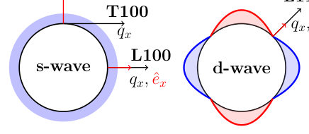
<figcaption class="paper-figure-caption"><b>Fig 1.</b> Figure 1. Example gap structures and phonon modes. The blue (red) shaded regions denote areas where the super- conducting gap is positive (negative). The relevant acoustic phonon modes—longitudinal and transverse—are shown with propagation along q and polarization along ˆeλ. Notation : Thkl, Lhkl denote transverse (T) and longitudinal (L) phonon modes respectively, propagating along hkl.</figcaption>
</figure>
<figure class="paper-figure-card">
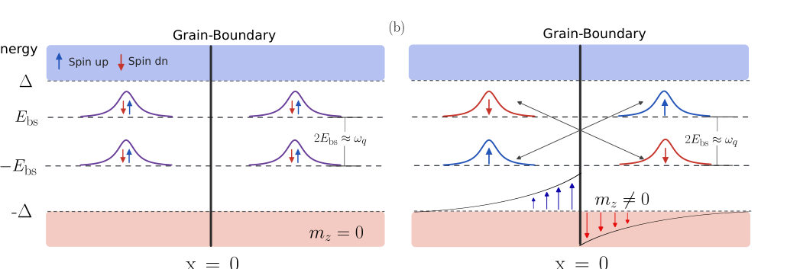
<figcaption class="paper-figure-caption"><b>Fig 2.</b> Figure 2. Attenuation from bound states : (a) Non-magnetic bound state: Andreev bound states and their quasiparticle spin content on either side of a grain boundary in an unconventional superconductor. (b) Magnetic bound state: In the presence of local magnetism, the spin-selective character of the Zeeman-split in-gap Andreev bound states changes sign across the grain boundary. The black arrows indicate the nonzero contribution to the ultrasonic attenuation coefficient from quasiparticles associated with the particle–hole-symmetric bound states.</figcaption>
</figure>
<figure class="paper-figure-card">
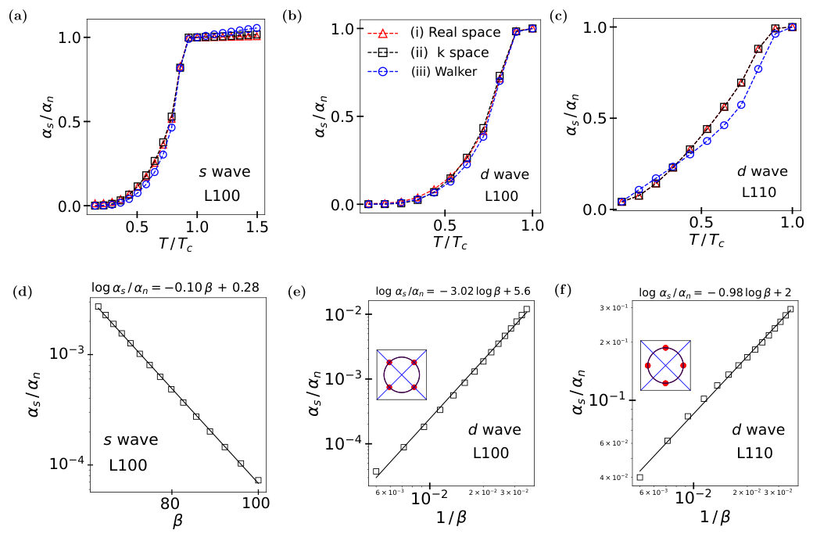
<figcaption class="paper-figure-caption"><b>Fig 3.</b> Figure 3. Temperature dependence of the normalized attenuation coefficient αs in the superconducting state relative to the normal state. (a) Attenuation for s-wave superconductor (∆(k) = ∆0) in the L100 mode. Attenuation for a d-wave superconductor (∆(k) = ∆0(cos kx −cos ky)) are shown for L100 mode (b), and L110 mode (c). Panels (d), (e) and (f) correspond to the low temperature characteristics of the (a), (b) and (c), respectively showing the exponential characteristics for s-wave and power law for d-wave gap functions. Inset in panel (e),(f) show the Fermi surface (black solid line) with n = 0.8 and t′ = 0.3. The nodal lines of superconducting gap (blue) and zeros of electron-phonon...</figcaption>
</figure>
<figure class="paper-figure-card">
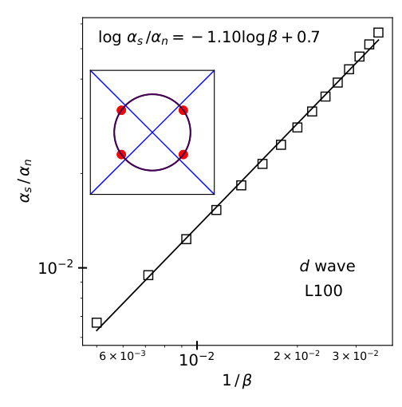
<figcaption class="paper-figure-caption"><b>Fig 4.</b> Figure 4. The low temperature characteristics of dx2−y2 for L100 mode for a different Fermi surface (n = 0.6), with ze- ros of the electron–phonon matrix element F(k, q), not lying along the nodal lines.</figcaption>
</figure>
<figure class="paper-figure-card">
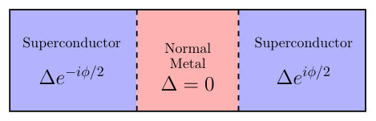
<figcaption class="paper-figure-caption"><b>Fig 5.</b> Figure 5. Schematic of a SNS junction with phase difference of ϕ between the left and right superconductor.</figcaption>
</figure>
</div>

<p><strong>Summary.</strong> This theoretical work calculates ultrasonic attenuation in inhomogeneous superconductors to probe the nature of subgap bound states. By using a BdG formulation, the authors show that the attenuation signal is highly sensitive to the spin structure and symmetry of the bound states. This allows ultrasound to distinguish between different types of electronic states, such as those induced by non-magnetic versus magnetic impurities at grain boundaries.</p>
<p><strong>Why it may be interesting.</strong> The sensitivity of the attenuation to spin structure and symmetry provides a powerful, non-spectroscopic probe for understanding exotic pairing symmetries and local magnetic moments in strongly correlated superconductors.</p>
<details>
<summary>Detailed structure</summary>
<p><strong>Main problem.</strong> The paper investigates how ultrasonic attenuation can be used to distinguish between different types of superconducting bound states (e.g., magnetic vs. non-magnetic) in inhomogeneous superconductors.</p>
<p><strong>Main result.</strong> The attenuation signature is highly sensitive to the symmetry and spin structure of the bound states; specifically, local magnetism can induce a clear attenuation peak where non-magnetic impurities cause only weak signals due to coherence factor cancellation.</p>
<p><strong>Method.</strong> The authors use a real-space Bogoliubov-de Gennes (BdG) formulation combined with linear response theory to calculate the first-order correction to the phonon decay rate.</p>
<p><strong>Model / system.</strong> The study models superconductors, focusing on inhomogeneous junctions like phase-biased SNS junctions and grain boundaries in $d_{x^2-y^2}$ superconductors. The calculation involves the electron-phonon interaction derived from hopping parameter variations.</p>
<p><strong>Key observables.</strong> Ultrasonic attenuation coefficient ($\alpha(q, \lambda)$) and the phonon lifetime ($    au_{q\lambda}$).</p>
<p><strong>Important parameters / regimes.</strong> Low temperatures, phonon frequency matching subgap level separation, and the presence/absence of local magnetism.</p>
<p><strong>Assumptions / limitations.</strong> The analysis relies on the first-order correction in the decay rate calculation and uses an effective mean-field model for the superconducting gap.</p>
<p><strong>Figures summary.</strong> Figures illustrate gap structures, the comparison of attenuation from non-magnetic vs. magnetic bound states, and the temperature dependence of attenuation in s-wave and d-wave systems.</p>
<p><strong>Paper structure.</strong> The paper develops the theoretical framework using BdG formalism and linear response theory, applies it to specific inhomogeneous geometries (SNS junctions, grain boundaries), and contrasts the resulting attenuation signatures based on the nature of the impurity/disorder.</p>
</details>
<details>
<summary>Abstract</summary>
<p>Subgap bound states can produce pronounced features in the density of states without necessarily giving rise to a corresponding signal in ultrasonic attenuation. We show that the coherence factors act as a filter for the contribution of bound states to ultrasonic attenuation. In a phase-biased superconductor--normal--superconductor junction, the Andreev bound states produce a resonance in the attenuation when the phonon frequency matches the phase-dependent separation between the subgap levels. The situation is different at a $(110)$ grain boundary in a $d_{x^2-y^2}$ superconductor. There, nonmagnetic impurity-induced bound states remain weak in the attenuation despite their large spectral weight, because the relevant coherence factors nearly cancel. When local magnetism develops near the boundary, this cancellation is removed, the bound states become spin split, and a clear attenuation peak appears, which we argue is governed by a process involving emission of phonons by pair of quasiparticles at low temperatures. We obtain these results using a real-space Bogoliubov--de Gennes formulation of ultrasonic attenuation and benchmark the method against the known low-temperature behavior of homogeneous $s$- and $d$-wave superconductors. The results show that ultrasound can distinguish bound states with similar spectral signatures but different symmetry and spin structure.</p>
</details>
<p><sub><a href="#top">↑ back to top</a></sub></p>

<p><a id="paper-2608.19185"></a></p>
<h3 id="unconventional-bond-and-current-density-waves-on-hexagonal-lattices"><a href="http://arxiv.org/abs/2608.19185v1">Unconventional bond- and current-density waves on hexagonal lattices</a></h3>
<p><strong>Authors:</strong> Andras Szabo, Hannes Braun, Laura Classen<br>
<strong>Type:</strong> theory · <strong>Category:</strong> strongly correlated electrons · <strong>PDF:</strong> <a href="https://arxiv.org/pdf/2608.19185v1">https://arxiv.org/pdf/2608.19185v1</a><br>
<strong>Analysis basis:</strong> full PDF text, analyzed in chunks
<strong>Topic relevance:</strong> <code>analog quantum simulation</code> <strong>1/5</strong></p>
<div class="figure-strip-hint">↔ Scroll figures horizontally</div>
<div class="paper-figures-scroll">
<figure class="paper-figure-card">
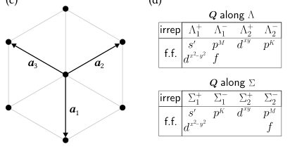
<figcaption class="paper-figure-caption"><b>Fig 1.</b> FIG. 1. Top: hexagonal Brillouin zone and ±Q1,2,3 symmetry related ordering wave vectors forming the star. In (a) these fall on the Γ−K line also known as Λ and in (b) on the Γ−M or Σ line. Bottom: (c) Triangular lattice with bonds a1,2,3 indicated with arrows. (d) Classification of nearest neighbor form factors on the triangular lattice according to LG irreps for the two cases shown in (a) and (b). For the expressions of the form factors see text.</figcaption>
</figure>
<figure class="paper-figure-card">
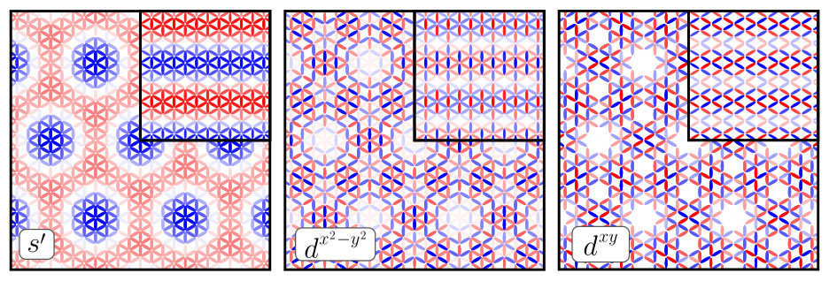
<figcaption class="paper-figure-caption"><b>Fig 2.</b> FIG. 2. Depictions of bond orders in real space with form factors indicated in the bottom left. In each panel, the main figure and the inset correspond to a multi-Q and single-Q ground state, respectively, and we set all phases to be ϕi = θi = 0.</figcaption>
</figure>
<figure class="paper-figure-card">
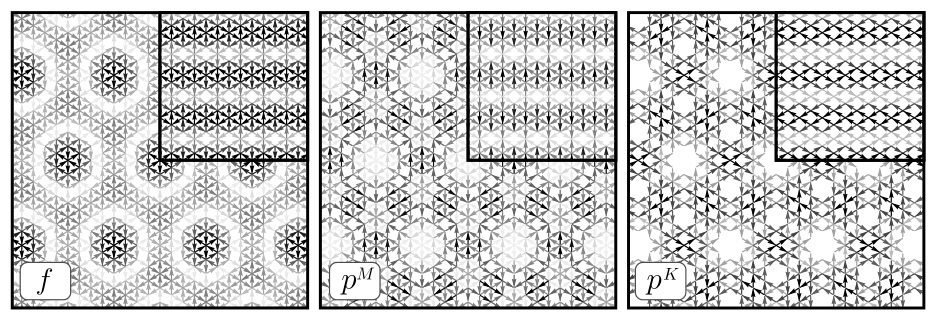
<figcaption class="paper-figure-caption"><b>Fig 3.</b> FIG. 3. Depictions of current orders in real space with form factors indicated in the bottom left. In each panel, the main figure and the inset correspond to a multi-Q and single-Q ground state, respectively, and we set all phases to be ϕ′ i = θ′ i = 0.</figcaption>
</figure>
<figure class="paper-figure-card">
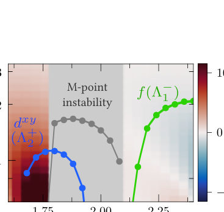
<figcaption class="paper-figure-caption"><b>Fig 4.</b> FIG. 4. Phase diagram as a function of T and µ. The blue and green (gray) line show the critical temperature Tc for the CDW instability for Qi = Ki/4 (Qi = Mi) which transform according to the irreps Λ+ 2 with dxy form factor and Λ− 1 with f form factor, respectively. The gray area indicates the region where a transition to the Qi = Mi CDW instability occurs before one towards Qi = Ki/4. The background color encodes 2β1 −β2 for each instability which determines if the order is single-Q (2β1 −β2 &lt; 0) or multi-Q (2β1 −β2 &gt; 0). The parameters used are U = 3t, J = 0.7t and N = 4.</figcaption>
</figure>
<figure class="paper-figure-card">
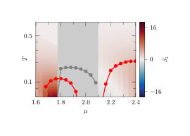
<figcaption class="paper-figure-caption"><b>Fig 5.</b> FIG. 5. Quartic Ginzburg-Landau coefficient β1 for Q = K/4, evaluated for the leading RPA eigenchannel as a function of temperature and chemical potential. The red (grey) line indi- cates the critical temperature Tc for the CDW instability for Q = K/4 (Q = M).</figcaption>
</figure>
</div>

<p><strong>Summary.</strong> This work establishes a comprehensive theoretical framework to classify unconventional Charge-Density Wave (CDW) orders on hexagonal lattices by integrating local symmetry constraints (little group) with multiple ordering wave vectors. Using RPA on the triangular lattice, the authors derive Landau free energies whose coefficients determine whether the ground state favors a single-momentum-vector (single-Q) or multi-momentum-vector (multi-Q) order. This provides a systematic route for predicting exotic electronic ground states in correlated quantum materials.</p>
<p><strong>Why it may be interesting.</strong> The rigorous application of group theory to classify complex ordered phases like CDWs provides a powerful, generalizable theoretical tool for understanding electronic instabilities in correlated materials, which is relevant to understanding exotic quantum states.</p>
<details>
<summary>Detailed structure</summary>
<p><strong>Main problem.</strong> The paper develops a systematic framework to describe unconventional Charge-Density Wave (CDW) phases that incorporate both local symmetries (little group) and multiple symmetry-related ordering wave vectors (the 'star').</p>
<p><strong>Main result.</strong> The stability of the CDW state (single-Q vs. multi-Q) is determined by the sign of the coefficient $2eta_1 - eta_2$ in the Landau free energy, allowing for a systematic classification of ground states.</p>
<p><strong>Method.</strong> The analysis combines group-theoretical symmetry analysis (using little groups and space groups) with mean-field theory, specifically calculating Landau free energy coefficients via the Random Phase Approximation (RPA).</p>
<p><strong>Model / system.</strong> The study focuses on two-dimensional hexagonal lattices, using the triangular lattice as a minimal example, analyzed via a tight-binding model and Hubbard-type interactions.</p>
<p><strong>Key observables.</strong> Order parameters ($\Delta, \psi, \eta$), Landau free energy coefficients ($\alpha, eta, \gamma$), and the resulting CDW structure (bond or current density).</p>
<p><strong>Important parameters / regimes.</strong> Chemical potential ($\mu$), temperature ($T$), and the relative signs of the quartic free energy coefficients ($eta_1, eta_2$).</p>
<p><strong>Assumptions / limitations.</strong> The analysis relies on mean-field approximations (RPA) and the systematic incorporation of local symmetries via the little group.</p>
<p><strong>Figures summary.</strong> Figures illustrate the hexagonal Brillouin zone and the classification of form factors based on symmetry. Other figures show the dependence of free energy coefficients ($eta_1, 2eta_1 + eta_2$) on temperature and chemical potential, determining the phase stability.</p>
<p><strong>Paper structure.</strong> The paper proceeds by establishing the general symmetry framework (LG/SG) for unconventional CDWs, deriving the relevant form factors and symmetry-constrained Landau free energies, and finally applying this framework to the triangular lattice using RPA calculations to determine the ground state phase.</p>
</details>
<details>
<summary>Abstract</summary>
<p>Charge-density wave (CDW) orders are conventionally described as modulations of on-site charge at an ordering wave vector $\boldsymbol{Q}$ with symmetry-related wave vectors typically forming a multicomponent order-parameter manifold. Recent developments significantly broadened this phenomenology to bond and loop-current density waves, which possess nontrivial, potentially symmetry-breaking textures within the unit cell in addition to their spatial modulation at $\boldsymbol{Q}$. Such textures arise from particle-hole condensates with nonzero angular momentum, analogous to unconventional superconductivity, and their symmetries are described by the little group $G_{\boldsymbol{Q}}$. In this work, we develop a framework for unconventional CDW phases that simultaneously incorporates the local symmetries described by little group and the presence of multiple symmetry-related ordering wave vectors, also known as the star. The resulting multicomponent order parameter transforms under representations of the full space group induced from irreducible representations of $G_{\boldsymbol{Q}}$. We apply this framework to two-dimensional lattices with sixfold symmetry and ordering wave vectors along high-symmetry lines, and derive the corresponding Landau free energies. As a microscopic example, we demonstrate the emergence of unconventional bond and loop-current orders from electronic interactions on the triangular lattice within the random phase approximation, and determine their ground states by microscopically evaluating the relevant coefficients in the free energy. Our framework provides a systematic route to describing unconventional modulated phases and can be readily extended to more complex lattices.</p>
</details>
<p><sub><a href="#top">↑ back to top</a></sub></p>
<h2 id="other-papers-17">Other papers (17)</h2>
<p><em>Papers from primary archives without highlighted authors or any topic match. Click to expand.</em></p>
<details>
<summary>Show other papers</summary>

<p><a id="paper-2608.18650"></a></p>
<h3 id="almost-quadruply-optimal-unitary-designs-in-1d"><a href="http://arxiv.org/abs/2608.18650v1">(Almost) quadruply optimal unitary designs in 1D</a></h3>
<p><strong>Authors:</strong> Guoding Liu, Jonas Helsen<br>
<strong>Type:</strong> theory · <strong>Category:</strong> quantum information and computing · <strong>PDF:</strong> <a href="https://arxiv.org/pdf/2608.18650v1">https://arxiv.org/pdf/2608.18650v1</a><br>
<strong>Analysis basis:</strong> full PDF text, analyzed in chunks</p>
<div class="figure-strip-hint">↔ Scroll figures horizontally</div>
<div class="paper-figures-scroll">
<figure class="paper-figure-card">
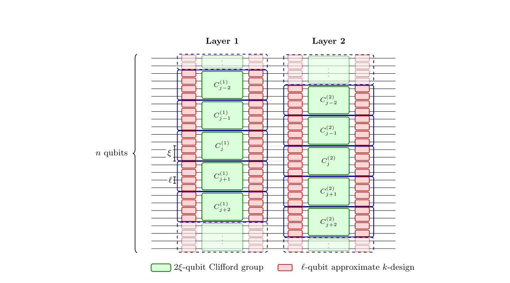
<figcaption class="paper-figure-caption"><b>Fig 1.</b> Figure 1: Circuit architecture for nearly optimal 1D approximate unitary k-designs. The con- struction employs a two-layer block-brickwork architecture acting on a 1D chain, where each block spans 2ξ qubits with an overlap of ξ qubits between adjacent layers. The block size scales as ξ = O(log(n/ε) + k). Each 2ξ-qubit block is realized as a magic-augmented circuit, consisting of a random Clifford operation flanked by ℓ-local ε′′-error approximate unitary k-designs, where the locality is ℓ= O(log k) and the relative error of the local block is set to ε′′ = 2−2ℓk.</figcaption>
</figure>
<figure class="paper-figure-card">
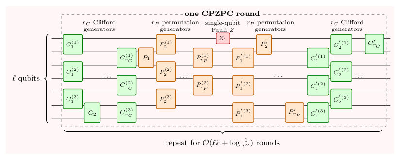
<figcaption class="paper-figure-caption"><b>Fig 2.</b> Figure 2: Implementation of the ℓ-local ε′′-relative-error approximate unitary k-design. An ℓ-qubit approximate unitary k-design with relative error ε′′ is constructed by repeating O(ℓk + log(1/ε′′)) rounds of CPZPC generators. Each individual round consists of 2rC Clifford group generators, 2rP permutation group generators, and a single Pauli Z gate, where rC and rP are fixed constants. All generators are strictly constant-local in a 1D nearest-neighbor layout.</figcaption>
</figure>
<figure class="paper-figure-card">
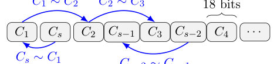
<figcaption class="paper-figure-caption"><b>Fig 3.</b> Figure 3: Folded cell order. The cyclic shift matrix used by Kassabov couples Ca only to Ca+1 (mod s). In this ordering, those cyclic neighbors are constant-distance neighbors on an open one-dimensional line.</figcaption>
</figure>
</div>
<p><strong>Summary.</strong> This paper presents a method to construct approximate unitary k-designs on 1D quantum hardware that achieves near-optimal scaling for both circuit depth and the number of required magic gates. By refining previous techniques and combining them with the Gluing Lemma, the authors demonstrate efficient resource utilization for generating highly mixed quantum states on linear quantum processors.</p>
<p><strong>Why it may be interesting.</strong> This work provides concrete, resource-efficient circuit constructions for achieving highly mixed quantum states (unitary designs) on physically constrained 1D hardware, which is crucial for quantum simulation and computation.</p>
<details>
<summary>Detailed structure</summary>
<p><strong>Main problem.</strong> The central problem is constructing approximate unitary k-designs on 1D quantum architectures with minimal resource overhead regarding circuit depth and magic gates.</p>
<p><strong>Main result.</strong> The authors achieve simultaneous near-optimality in circuit depth and T-gate count for 1D systems, matching known lower bounds up to a logarithmic factor.</p>
<p><strong>Method.</strong> The construction combines and refines existing results, utilizing a two-layer block-brickwork architecture and the Gluing Lemma to extend local designs to global ones.</p>
<p><strong>Model / system.</strong> The system is modeled as a 1D nearest-neighbor quantum architecture (qubits) implementing unitary operations, involving Clifford group operations and random permutations.</p>
<p><strong>Key observables.</strong> Circuit depth, number of magic gates (T gates), and the relative error ($\epsilon$) of the unitary k-design.</p>
<p><strong>Important parameters / regimes.</strong> Design order $k$, system size $n$, relative error $\epsilon$, and locality $\ell$.</p>
<p><strong>Assumptions / limitations.</strong> The construction relies on the Gluing Lemma and assumes the block size is an integer multiple of the locality parameter.</p>
<p><strong>Figures summary.</strong> Figure 1 illustrates the two-layer block-brickwork circuit architecture for the design, and Figure 2 relates to implementing the local generators using CPZPC generators.</p>
<p><strong>Paper structure.</strong> The paper builds by first improving the magic block size reduction, then constructing a constant-spectral-gap generating set for the Clifford group, and finally combining these elements using the gluing lemma to prove the main near-optimal design result.</p>
</details>
<details>
<summary>Abstract</summary>
<p>We construct $n$-qubit approximate unitary $k$-designs in 1D systems, achieving circuit depth $O(\log(n/\varepsilon) + k\log k)$ with relative error $\varepsilon$ and requiring $O(nk\log k)$ magic gates. This matches existing lower bounds $Ω(\log(n/\varepsilon) + k)$ for circuit depth, and $\widetildeΩ(nk)$ for the required number of $T$ gates, up to a $\log k$ factor, achieving simultaneous near-optimality in all parameters. Our construction is based on a combination and refinement of two existing results. We reduce the required magic block size for breaking Clifford symmetries in the magic-augmented circuit construction of Zhang et al. from $O(k\log k)$ to $O(\log k)$. We also improve the breakthrough construction of Chen et al. to construct a generating set of 1D local constant-depth circuits for the unitary group with a constant spectral gap, making $O(\log k)$-local random unitaries realizable in depth $O(k\log k)$. As a by-product, we provide a constant-size 1D-local generating set for the Clifford group, which we expect to be of independent interest. Combining the two results with the gluing lemma, we prove the final result.</p>
</details>
<p><sub><a href="#top">↑ back to top</a></sub></p>

<p><a id="paper-2608.18946"></a></p>
<h3 id="alphaclifford-efficient-clifford-synthesis-and-transpilation-with-model-based-rl"><a href="http://arxiv.org/abs/2608.18946v1">AlphaClifford: Efficient Clifford Synthesis and Transpilation with Model-based RL</a></h3>
<p><strong>Authors:</strong> Daniele Lizzio Bosco, Jacopo Cossio, Carla Piazza, Giuseppe Serra<br>
<strong>Type:</strong> theory · <strong>Category:</strong> quantum information and computing · <strong>PDF:</strong> <a href="https://arxiv.org/pdf/2608.18946v1">https://arxiv.org/pdf/2608.18946v1</a><br>
<strong>Analysis basis:</strong> full PDF text, analyzed in chunks</p>
<div class="figure-strip-hint">↔ Scroll figures horizontally</div>
<div class="paper-figures-scroll">
<figure class="paper-figure-card">
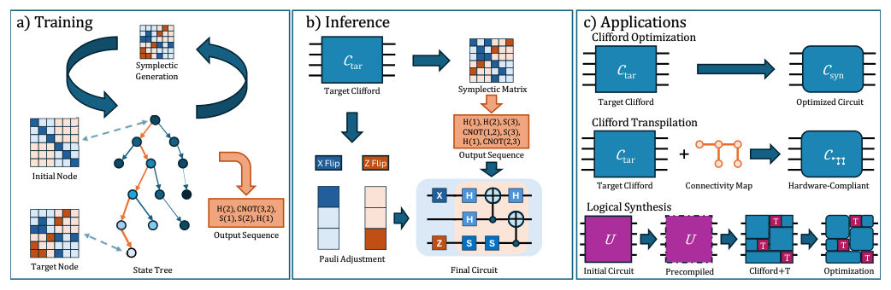
<figcaption class="paper-figure-caption"><b>Fig 1.</b> Fig. 1: a) We train our model to reproduce a target symplectic matrix. Each symplectic matrix is modelled as the node of a tree, where nodes are connected if the corresponding matrices can be reached with an operation from H, S, and CNOT. We train a MCTS-based model as a pair of value network (for nodes, e.g. lighter blue corresponds to a higher value) and policy network (for edges, e.g. wider arrows corresponds to higher probabilities). b) Given a target Clifford circuit Ctar, we utilize our model to synthesize a circuit C with the same symplectic matrix, i.e. P ·C ≡Ctar for a suitable Pauli P. We then compute the P from initial circuit, and we apply the corresponding gates to the obtained...</figcaption>
</figure>
<figure class="paper-figure-card">
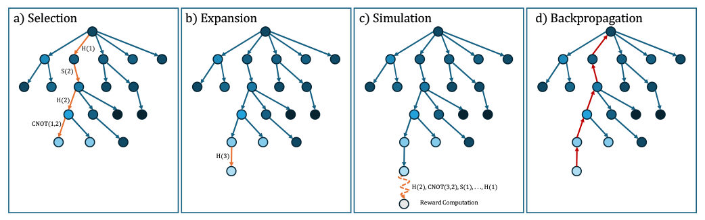
<figcaption class="paper-figure-caption"><b>Fig 2.</b> Fig. 2: Overview of the Monte Carlo Tree Search (MCTS) phases for Clifford circuit synthesis. The search space is explored by iteratively executing four distinct stages: (a) Selection: The tree is traversed from the root (representing the target symplectic matrix C) to a leaf node. Actions, corresponding to Clifford gates H, S, and CNOT, are chosen by balancing exploration and exploitation using the UCT formula. (b) Expansion: When reaching a leaf node, the tree is expanded by the addition of one or more child nodes, each representing the state resulting from a possible Clifford operation. (c) Simulation: A rollout is performed from the newly expanded node based on the policy network. A...</figcaption>
</figure>
<figure class="paper-figure-card">
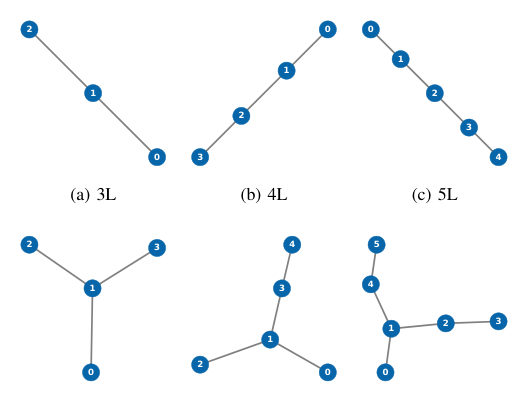
<figcaption class="paper-figure-caption"><b>Fig 3.</b> Fig. 3: Hardware connectivity maps utilized for benchmarking: Line graphs (a-c) and T-shape graphs (d-f). Vertices represent physical qubits and edges represent available coupling map connections.</figcaption>
</figure>
</div>
<p><strong>Summary.</strong> This paper introduces AlphaClifford, a novel model-based Reinforcement Learning framework that uses Monte Carlo Tree Search to efficiently synthesize and optimize Clifford quantum circuits. By modeling the problem using the algebraic structure of the symplectic group, it significantly outperforms existing heuristics in minimizing gate counts for both general optimization and hardware-constrained transpilation.</p>
<p><strong>Why it may be interesting.</strong> While focused on abstract computation, the rigorous mathematical modeling of the state space using group theory (symplectic group) and the application of advanced AI search techniques (MCTS) provide powerful computational tools applicable to modeling complex quantum dynamics.</p>
<details>
<summary>Detailed structure</summary>
<p><strong>Main problem.</strong> Standard methods for synthesizing Clifford quantum circuits yield sub-optimal gate counts, which is inefficient for fault-tolerant quantum computation.</p>
<p><strong>Main result.</strong> AlphaClifford achieves significant reductions (up to 56% total gate reduction) in gate counts compared to state-of-the-art heuristics for both unconstrained optimization and hardware-constrained transpilation.</p>
<p><strong>Method.</strong> The authors introduce AlphaClifford, a model-based Reinforcement Learning framework utilizing Monte Carlo Tree Search (MCTS) to explore the combinatorial space of Clifford circuits.</p>
<p><strong>Model / system.</strong> The system involves Clifford circuits, which are mathematically characterized by their action on the symplectic group $ ext{Sp}(2n,     ext{F}_2)$ via the symplectic matrix representation $M = [X Z]$.</p>
<p><strong>Key observables.</strong> Total gate count and two-qubit (CNOT) gate count are minimized; the goal is to match a target symplectic matrix $M_{	ext{target}}$.</p>
<p><strong>Important parameters / regimes.</strong> The fundamental gate set is {H, S, CNOT}; the state space is modeled using the algebraic properties of the symplectic group.</p>
<p><strong>Assumptions / limitations.</strong> The synthesis guarantees equivalence only up to a Pauli layer ($P \in P_n$), relying on the homomorphism $\phi: C_n 	o 	ext{Sp}(2n, 	ext{F}_2)$.</p>
<p><strong>Figures summary.</strong> Figure 1 illustrates the process: (a) Training uses MCTS on the symplectic matrix tree; (b) Synthesis uses the model to find a circuit matching a target matrix; (c) Shows applications in optimization, transpilation, and logical synthesis.</p>
<p><strong>Paper structure.</strong> The paper details the mathematical formulation using symplectic matrices, introduces the AlphaClifford RL framework powered by MCTS, presents results across general optimization and transpilation tasks, and discusses future directions.</p>
</details>
<details>
<summary>Abstract</summary>
<p>Clifford circuits play a foundational role in quantum computing, particularly due to their importance in quantum error correction and fault-tolerant logical synthesis. While these circuits can be efficiently simulated and represented as symplectic matrices, standard synthesis methods-such as the Aaronson-Gottesman algorithm-often yield sub-optimal circuits with excessively high gate counts. In this work, we introduce AlphaClifford, a model-based Reinforcement Learning framework powered by Monte Carlo Tree Search, designed to efficiently synthesize Clifford circuits from the fundamental gate set composed of H, S, and CNOT. By modeling the state space through the algebraic properties of the symplectic group, AlphaClifford effectively explores this combinatorial space to minimize overall circuit cost. For unconstrained Clifford optimization, our approach achieves a consistent reduction in both total and two-qubit (CNOT) gate counts compared to state-of-the-art synthesis heuristics, despite operating with a strictly less expressive gate set. Furthermore, we demonstrate the broad applicability of our framework on two additional tasks: hardware-constrained Clifford transpilation, where we outperform existing RL-based compilers, and as a post-synthesis optimization component within a full Clifford+T logical synthesis pipeline. Our results underscore that model-based RL is highly effective at addressing the combinatorial complexities of quantum compilation, offering a scalable pathway to mitigate hardware constraints in both near-term and future fault-tolerant quantum devices.</p>
</details>
<p><sub><a href="#top">↑ back to top</a></sub></p>

<p><a id="paper-2608.19056"></a></p>
<h3 id="anti-spin-laue-groups-classification-of-anti-altermagnets-and-their-representative-minimal-models"><a href="http://arxiv.org/abs/2608.19056v1">Anti-spin Laue groups: classification of anti-altermagnets and their representative minimal models</a></h3>
<p><strong>Authors:</strong> Colin Lange, Rodrigo Jaeschke-Ubiergo, Alexander Mook, Jairo Sinova<br>
<strong>Type:</strong> theory · <strong>Category:</strong> strongly correlated electrons · <strong>PDF:</strong> <a href="https://arxiv.org/pdf/2608.19056v1">https://arxiv.org/pdf/2608.19056v1</a><br>
<strong>Analysis basis:</strong> full PDF text, analyzed in chunks</p>
<div class="figure-strip-hint">↔ Scroll figures horizontally</div>
<div class="paper-figures-scroll">
<figure class="paper-figure-card">
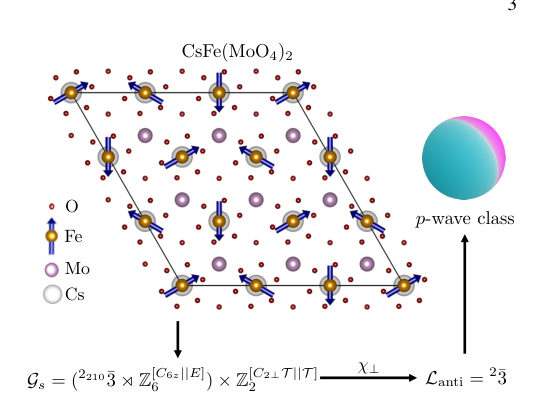
<figcaption class="paper-figure-caption"><b>Fig 1.</b> FIG. 2. Reduction of complex SSG to concise anti-spin Laue group in CsFe(MoO4)2. A top view of the spin helix structure of CsFe(MoO4)2 and its spin point group is indicated. 𝜒⊥denotes the anti-spin Laue group reduction to the the group 2¯3 which is in the 𝑝-wave class of Tab. II.</figcaption>
</figure>
<figure class="paper-figure-card">
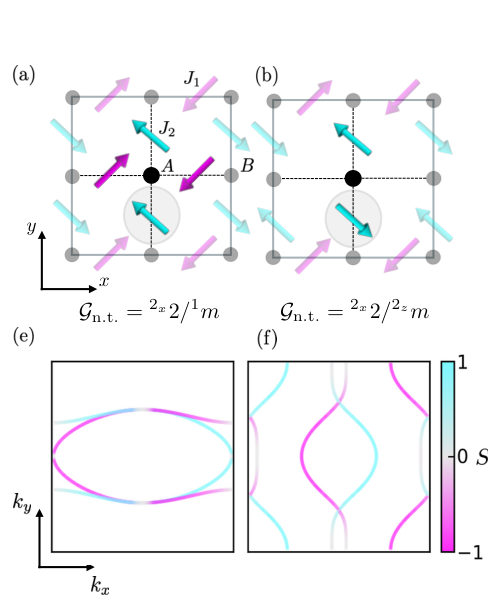
<figcaption class="paper-figure-caption"><b>Fig 2.</b> FIG. 1. Different real-space lattice models belonging to the same anti-spin Laue group 22/1𝑚. (a),(b) Real-space lattice models with coplanar magnetic textures described by the nontrivial spin point groups Gn.t. = 2𝑥2/1𝑚and Gn.t. = 2𝑥2/2𝑧𝑚, respectively. (c),(d) Isoenergy lines of the corresponding models in momentum space. 𝑆⊥denotes the out-of-plane spin polarization of the respective bands. Despite their distinct real-space spin symmetries, both exhibit the same nodal structure, with a nodal line at 𝑘𝑥= 0.</figcaption>
</figure>
<figure class="paper-figure-card">
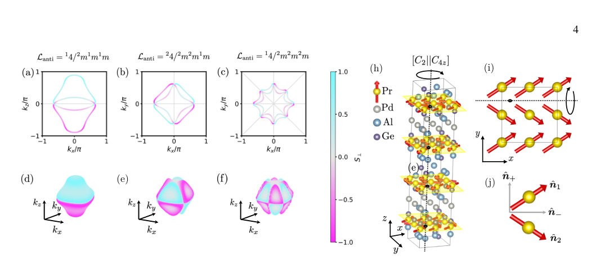
<figcaption class="paper-figure-caption"><b>Fig 3.</b> FIG. 3. Type-A models for three anti-spin Laue groups of the 4/𝑚𝑚𝑚crystal system. (a)–(c) Spin-polarized isoenergy cuts of the 𝑝-, 𝑓-, and ℎ-wave representatives with anti-spin Laue groups 14/2𝑚1𝑚1𝑚, 24/2𝑚2𝑚1𝑚, and 14/2𝑚2𝑚2𝑚, respectively. (d)–(f) Corresponding three-dimensional isoenergy surfaces. The color code denotes 𝑆⊥and reveals the symmetry-enforced nodal planes. (h)–(j) 𝑓-wave candidate Pr2PdAl7Ge4 [71]: its physical moments are interchanged by the [𝐶2||𝐶4] spin-symmetry, whereas their symmetric and antisymmetric combinations form a symmetry-adapted basis ˆn±.</figcaption>
</figure>
</div>
<p><strong>Summary.</strong> This paper introduces the concept of anti-spin Laue groups to systematically classify anti-altermagnets, which exhibit unique odd-parity spin splitting. By developing this classification, the authors create a unified theoretical framework that allows for the construction of minimal, material-oriented four-band models for unconventional magnets. This advances the understanding of how magnetic symmetry dictates electronic band structure in condensed matter systems.</p>
<p><strong>Why it may be interesting.</strong> This work provides a powerful, symmetry-enforced framework for understanding magnetic electronic structure, which is crucial for designing novel topological or correlated electronic materials relevant to quantum phenomena.</p>
<details>
<summary>Detailed structure</summary>
<p><strong>Main problem.</strong> To classify and develop minimal theoretical models for anti-altermagnets, which exhibit odd-parity nonrelativistic spin splitting and lack a simple symmetry classification analogous to existing spin Laue groups.</p>
<p><strong>Main result.</strong> The authors introduce anti-spin Laue groups, classifying 21 distinct groups that, together with spin Laue groups, provide a complete symmetry description for unconventional magnets with collinear momentum-space spin polarization.</p>
<p><strong>Method.</strong> The classification is achieved by projecting the full spin group onto the action on the out-of-plane spin polarization component, leading to a systematic model-construction algorithm for minimal four-band Hamiltonians.</p>
<p><strong>Model / system.</strong> The focus is on anti-altermagnets, which are coplanar magnets characterized by odd-parity nonrelativistic spin splitting. The theoretical framework unifies the symmetry description for both odd- and even-parity unconventional magnets.</p>
<p><strong>Key observables.</strong> The perpendicular spin polarization component, $S_{\perp}(k)$, and the resulting symmetry-enforced nodal spin-splitting character.</p>
<p><strong>Important parameters / regimes.</strong> Odd-parity spin splitting, collinear momentum-space spin polarization, and the structure of the anti-spin Laue groups ($    ext{R}<em ext_IIs="ext{IIs">{    ext{Is}},   ext{R}</em>$).}},  ext{R}_{    ext{IIIs}</p>
<p><strong>Assumptions / limitations.</strong> The construction retains only the action of the spin symmetry on the collinear momentum-space spin polarization, and an effective 'anti-inversion' symmetry must be added for anti-spin Laue groups.</p>
<p><strong>Figures summary.</strong> Figures illustrate the relationship between different real-space lattice models belonging to the same anti-spin Laue group, showing common nodal structures in momentum space, and visualizing the perpendicular spin polarization $S_{\perp}$ and nodal planes for various crystal systems.</p>
<p><strong>Paper structure.</strong> The paper first establishes the need for anti-spin Laue groups due to the unique symmetry of anti-altermagnets. It then details the construction of these groups, provides a comprehensive classification (21 groups), and concludes by presenting a systematic algorithm to build minimal, material-oriented four-band models.</p>
</details>
<details>
<summary>Abstract</summary>
<p>Anti-altermagnets exhibit odd-parity nonrelativistic spin splitting, yet unlike even-parity altermagnets, their momentum-space symmetries lack a reduced classification analogous to spin Laue groups. Here, we introduce anti-spin Laue groups, organized into three distinct classes, and identify 21 groups describing the odd-parity partial wave character of this unconventional class. Together with the 10 spin Laue groups of altermagnets, they complete the classification of nonrelativistic unconventional magnets with collinear momentum-space spin polarization. Anti-spin Laue groups also provide a many-to-one reduction of spin space (point) groups by retaining only their action on the collinear momentum-space spin polarization, thereby directly encoding the symmetry-enforced nodal spin-splitting character. Based on this we develop a systematic model-construction algorithm yielding minimal, material-oriented four-band models. This framework places odd- and even-parity unconventional magnets on equal footing within a unified momentum-space symmetry description.</p>
</details>
<p><sub><a href="#top">↑ back to top</a></sub></p>

<p><a id="paper-2608.18841"></a></p>
<h3 id="copy-protection-with-correlated-challenges-point-functions-and-more-via-decisional-coset-monogamy"><a href="http://arxiv.org/abs/2608.18841v1">Copy-Protection with Correlated Challenges: Point Functions and More via Decisional Coset Monogamy</a></h3>
<p><strong>Authors:</strong> Amit Behera, Alper Çakan, Vipul Goyal<br>
<strong>Type:</strong> theory · <strong>Category:</strong> other · <strong>PDF:</strong> <a href="https://arxiv.org/pdf/2608.18841v1">https://arxiv.org/pdf/2608.18841v1</a><br>
<strong>Analysis basis:</strong> full PDF text, analyzed in chunks</p>
<div class="figure-strip-hint">↔ Scroll figures horizontally</div>
<div class="paper-figures-scroll">
<figure class="paper-figure-card">
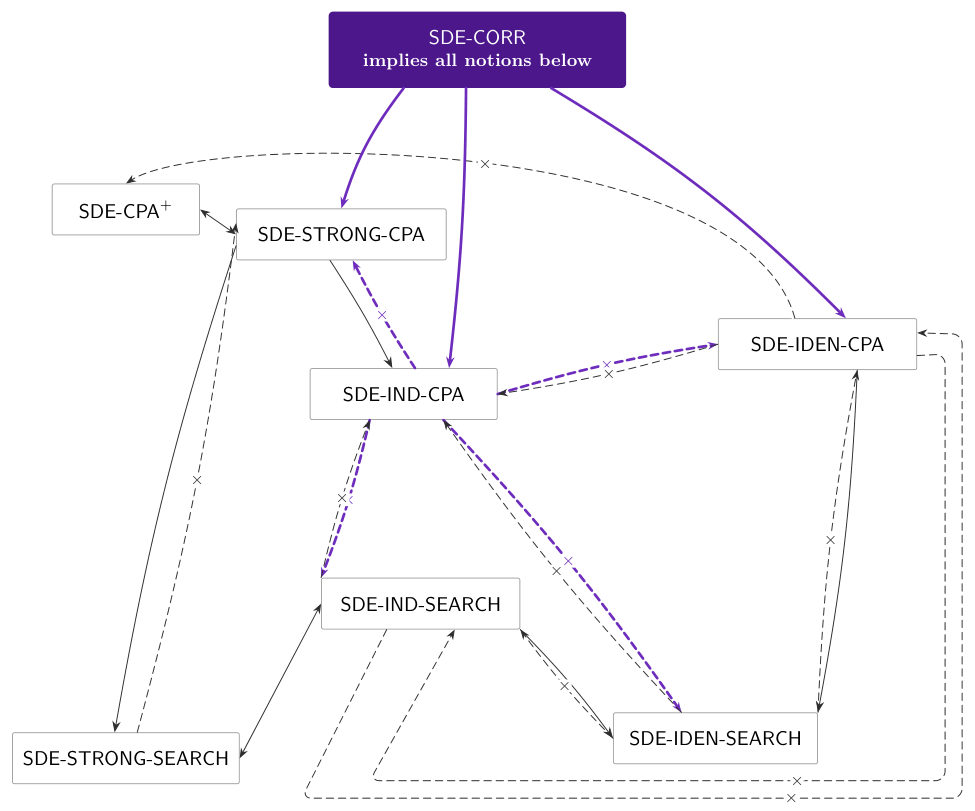
<figcaption class="paper-figure-caption"><b>Fig 1.</b> Figure 1: Hierarchy of SDE security notions under the standing assumptions of this subsection. Solid arrows denote implication, solid double-headed lines denote equivalence, and dashed directed arrows marked by a midpoint × denote failure of the implication in the arrow direction. Violet heavy lines are new in this work; black lines are prior or elementary. Unmarked directions are not claimed; in particular, the implication from SDE-CPA+ to SDE-IDEN-CPA remains open.</figcaption>
</figure>
</div>
<p><strong>Summary.</strong> This paper advances the theory of quantum cryptography by developing robust security notions for copy-protection and encryption that account for correlated or identical challenges. It provides constructions proving the existence of these secure primitives for general functionalities, resolving long-standing open questions in the field.</p>
<p><strong>Why it may be interesting.</strong> While highly theoretical, the rigorous mathematical framework developed for handling correlations in quantum information security has parallels with understanding complex, non-independent interactions in many-body quantum systems, where local measurements might reveal global correlations.</p>
<details>
<summary>Detailed structure</summary>
<p><strong>Main problem.</strong> The paper addresses the theoretical challenge of defining and proving security for quantum copy-protection and single-decryptor encryption (SDE) under natural, correlated challenge distributions, moving beyond simple independent challenges.</p>
<p><strong>Main result.</strong> The authors establish plain-model security for correlated challenge unclonable puncturable obfuscation (UPO) and achieve the first provable identical-challenge copy protection for point functions and general puncturable functionalities.</p>
<p><strong>Method.</strong> The methodology involves strengthening security definitions (e.g., correlated challenge security) and utilizing advanced cryptographic techniques, including a new decisional monogamy theorem for coset states, and relying on assumptions like post-quantum iO and quantum-hard LWE.</p>
<p><strong>Model / system.</strong> The work is purely theoretical, dealing with abstract cryptographic primitives applied to quantum states and computational circuits. The model involves quantum states, challenge samplers, and polynomial-size keyed circuits ($   ext{Circ}$).</p>
<p><strong>Key observables.</strong> Security notions such as correlated challenge security, identical-challenge security, and the success probability of distinguishing real vs. simulated quantum states.</p>
<p><strong>Important parameters / regimes.</strong> Security parameter $\lambda$, and the min-entropy $   ext{eH}_\infty(D\lambda)$ of the challenge sampler.</p>
<p><strong>Assumptions / limitations.</strong> The results assume the existence of post-quantum indistinguishability obfuscation (iO), one-way functions, and the quantum hardness of LWE.</p>
<p><strong>Figures summary.</strong> Not specified (The notes refer to general concepts and theorems rather than specific figure contents).</p>
<p><strong>Paper structure.</strong> The paper progresses by first defining stronger security notions for SDE and UPO to handle correlations, then proving the existence of constructions satisfying these notions using advanced cryptographic machinery, and finally applying these results to specific functions like point functions.</p>
</details>
<details>
<summary>Abstract</summary>
<p>Copy-protection encodes a functionality in a reusable quantum state that cannot be split into two states (freeloader adversaries) which remain simultaneously useful. Prior plain-model results handle only independently sampled challenges; the more natural identical-challenge notion, also tied to unclonable bits and copy-protection of point functions, has remained open. We strengthen these definitions and prove plain-model security for our new stronger notions. For single-decryptor encryption (SDE) we define correlated challenge security, show it implies all previous SDE notions including identical-challenge security, and prove that the construction of Kitagawa and Yamakawa (TCC'25) achieves it assuming iO and one-way functions. We also nearly fully characterize the relations among prior SDE notions. For general functionalities we define correlated challenge unclonable puncturable obfuscation (UPO), allowing arbitrary correlations among challenge points and puncturing bits plus auxiliary information before and after splitting, and requiring only conditionally uniform bits and $λ^c$ average conditional min-entropy in each point separately (thus, in particular, the points may be identical). Assuming post-quantum iO and quantum-hard LWE, we construct correlated UPO for polynomial-size keyed circuits with input length at least $λ^c$, answering an open question of Ananth, Behera, Huang, Kitagawa, Yamakawa (EUROCRYPT'26) and of Cakan-Goyal (EUROCRYPT'26). We also obtain the first plain-model copy protection for point functions, $k$-point functions, and compute-and-compare programs, and identical-challenge copy protection for general puncturable functionalities.</p>
</details>
<p><sub><a href="#top">↑ back to top</a></sub></p>

<p><a id="paper-2608.18420"></a></p>
<h3 id="entropic-rigidity-in-quantum-memories-how-geometry-and-algebra-control-the-onset-of-degeneracy-corrections"><a href="http://arxiv.org/abs/2608.18420v1">Entropic Rigidity in Quantum Memories: How Geometry and Algebra Control the Onset of Degeneracy Corrections</a></h3>
<p><strong>Authors:</strong> Yixin Zhao, Fei Yan<br>
<strong>Type:</strong> theory · <strong>Category:</strong> quantum information and computing · <strong>PDF:</strong> <a href="https://arxiv.org/pdf/2608.18420v1">https://arxiv.org/pdf/2608.18420v1</a><br>
<strong>Analysis basis:</strong> full PDF text, analyzed in chunks</p>
<div class="figure-strip-hint">↔ Scroll figures horizontally</div>
<div class="paper-figures-scroll">
<figure class="paper-figure-card">
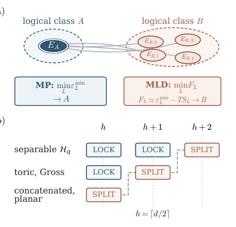
<figcaption class="paper-figure-caption"><b>Fig 1.</b> FIG. 1. Competition between peak probability and coset mass, and the entropic rigidity depth. (a) In an atlas fiber at fixed (s, w), MP selects the class containing the most probable microscopic representative, whereas MLD can select a competing class whose larger multiplicity lowers its logical sector free energy. Gray edges join representatives that share a syndrome but belong to different logical classes. (b) Exact certificates for neutral layers and the first strict witness give m = h + r: concatenated and planar families have r = 0, toric and Gross memories have r = 1, and the separable family Hq has r = 2. Here Hq is a single family admitting both hypergraph-product and bivariate...</figcaption>
</figure>
<figure class="paper-figure-card">
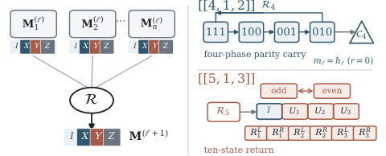
<figcaption class="paper-figure-caption"><b>Fig 2.</b> FIG. 2. Exact recursive returns at rigidity depth r = 0. For the [[4, 1, 2]] family, the parity vector of the three nontrivial logical sector weights follows a four phase cycle that closes under the exact RG map. For the [[5, 1, 3]] family, the identity state, three overlap states Ua, and their six directed resolutions RL a , RR a form a ten state alphabet that also closes under the RG map. In both families the first distance allowed layer remains a strict witness after every recursive step, so mℓ= hℓat all depths.</figcaption>
</figure>
<figure class="paper-figure-card">
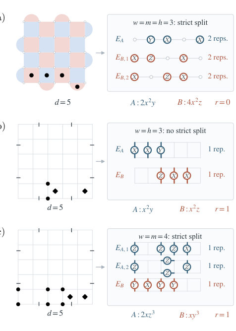
<figcaption class="paper-figure-caption"><b>Fig 3.</b> FIG. 3. Boundary corridors and periodic loop rigid- ity at d = 5. The labels “1 rep.” and “2 reps.” count distinct physical errors represented by each displayed compo- sition prototype. Errors counted by the same label have the same syndrome, logical class, Pauli composition, and proba- bility, but are not identical physical Pauli operators. (a) For the displayed planar syndrome, open boundaries permit four minimum weight representatives in class B but only two in class A. The resulting leading masses are PA = 2x2y and PB = 4x2z, so the first allowed layer h = 3 can already split the peak and mass decisions, giving r = 0. (b) For the dis- played toric syndrome at h = 3, each competing...</figcaption>
</figure>
<figure class="paper-figure-card">
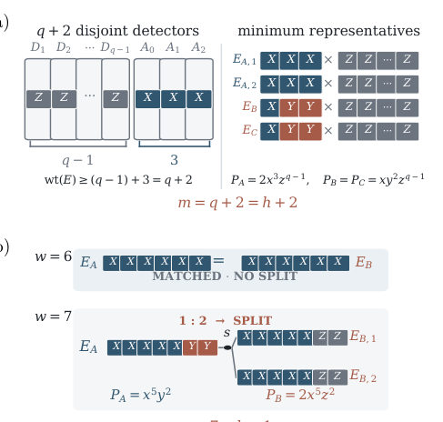
<figcaption class="paper-figure-caption"><b>Fig 4.</b> FIG. 4. Algebraic rigidity in qLDPC memories. (a) In the separable family, detector packing forces every cap with unequal Pauli composition to have weight at least q + 2. At that layer, two representatives in class A compete with single- ton representatives in two other classes. Their leading masses are PA = 2x3zq−1 and PB = PC = xy2zq−1, yielding the first strict split at m = q + 2 = h + 2. (b) In the Gross [[144, 12, 12]] code, Pauli purity keeps the w = 6 fibers com- position matched. At w = 7, one representative wins the peak comparison while a doublet in the competing class wins the mass comparison. The first strict split therefore occurs at m = 7 = h + 1.</figcaption>
</figure>
<figure class="paper-figure-card">
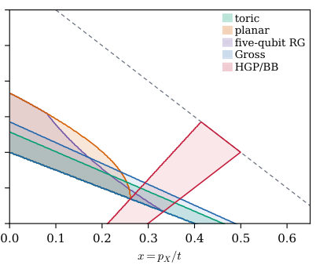
<figcaption class="paper-figure-caption"><b>Fig 5.</b> FIG. 5. Certified noise regions. Sufficient open regions in the interior Pauli simplex for the five-qubit RG, planar, toric, separable HGP/BB, and Gross-code results. The gray dashed line is the simplex boundary z = 0. The colored boundaries are sufficient certificates, not complete phase boundaries.</figcaption>
</figure>
</div>
<p><strong>Summary.</strong> This theoretical work establishes a quantitative measure called 'entropic rigidity depth' ($r$) to characterize the performance gap between two decoding strategies (MP vs. MLD) in quantum error correction. By relating this depth to the code's geometry and algebra, the authors provide a universal benchmark for understanding the fundamental limits of quantum memory reliability under noise.</p>
<p><strong>Why it may be interesting.</strong> While focused on QEC, the rigorous mathematical framework for quantifying 'entropic rigidity' provides a general tool for understanding how geometric constraints (like topology or algebraic structure) impose fundamental limits on information processing capacity.</p>
<details>
<summary>Detailed structure</summary>
<p><strong>Main problem.</strong> The paper determines the minimum physical error weight ($m$) at which the decision criteria from Maximum-Probability (MP) decoding and Degenerate Maximum-Likelihood (MLD) decoding diverge for quantum error-correcting codes.</p>
<p><strong>Main result.</strong> The divergence onset is governed by an entropic rigidity depth $r$, leading to a quantifiable hierarchy ($r=0, 1, 2$) that provides an exact benchmark for low-noise decoder selection.</p>
<p><strong>Method.</strong> The authors compare the peak probability (MP) against the total probability mass (MLD) using algebraic combinatorics and analyzing the lexicographic spectra of logical sectors.</p>
<p><strong>Model / system.</strong> The study analyzes quantum error-correcting codes, including planar surface codes, toric codes, and qLDPC codes, subjected to code-capacity Pauli noise.</p>
<p><strong>Key observables.</strong> Entropic rigidity depth ($r$), minimum error weight ($m$), and the gap $\Delta(t)$ between MP and MLD performance.</p>
<p><strong>Important parameters / regimes.</strong> Code distance ($d$), physical noise strength ($t$), and the universal bound $h = \lceil d/2 
ceil$.</p>
<p><strong>Assumptions / limitations.</strong> The analysis assumes the use of code-capacity Pauli noise to isolate intrinsic entropy effects and relies on defining the winner sets via set-valued comparisons.</p>
<p><strong>Figures summary.</strong> Figures compare MP vs. MLD performance, illustrate the entropic rigidity depth ($r$), and show finite noise curves and validity windows for planar and toric geometries.</p>
<p><strong>Paper structure.</strong> The paper progresses by defining the statistical comparison between MP and MLD, deriving the entropic rigidity depth $r$ via the relation $m=h+r$, and then certifying this depth for specific families of quantum codes.</p>
</details>
<details>
<summary>Abstract</summary>
<p>Maximum-probability (MP) decoding selects the most probable microscopic error, whereas degenerate maximum-likelihood (MLD) decoding includes the configurational entropy of an entire logical sector. Using code-capacity Pauli noise to isolate rigidity intrinsic to the code, we determine the first physical error weight $m$ at which their logical winner sets become disjoint, even under optimal MP tie resolution. Code distance imposes the universal bound $m\geq h=\lceil d/2\rceil$. We define the entropic rigidity depth $r$ through $m=h+r$ and certify a three-level hierarchy: $r=0$ for planar surface codes and two concatenated families, $r=1$ for odd-distance square toric codes and the Gross $[[144,12,12]]$ quantum low-density-parity-check code, and $r=2$ for a separable family with hypergraph product and bivariate bicycle descriptions. The onset fixes the leading operational failure gap, proportional to the $m$th power of the physical noise strength. Geometry and algebra therefore provide quantifiable controls of configurational entropy and an exact benchmark for low-noise decoder selection.</p>
</details>
<p><sub><a href="#top">↑ back to top</a></sub></p>

<p><a id="paper-2608.18536"></a></p>
<h3 id="good-stabilizer-codes-from-shallow-clifford-circuits-with-random-matchings"><a href="http://arxiv.org/abs/2608.18536v1">Good Stabilizer Codes from Shallow Clifford Circuits with Random Matchings</a></h3>
<p><strong>Authors:</strong> Emile Anand, Elia Gorokhovsky, Jennifer Hritz, Jingtong Sun<br>
<strong>Type:</strong> theory · <strong>Category:</strong> quantum information and computing · <strong>PDF:</strong> <a href="https://arxiv.org/pdf/2608.18536v1">https://arxiv.org/pdf/2608.18536v1</a><br>
<strong>Analysis basis:</strong> full PDF text, analyzed in chunks</p>
<div class="figure-strip-hint">↔ Scroll figures horizontally</div>
<div class="paper-figures-scroll">
<figure class="paper-figure-card">
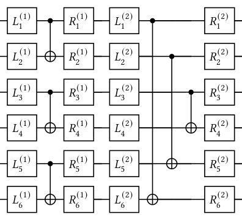
<figcaption class="paper-figure-caption"><b>Fig 1.</b> Figure 2: Two Clifford-twirled CNOT matching layers. Each 𝐿(𝑡) 𝑖 , 𝑅(𝑡) 𝑖 ∈C1 is an independent one-qubit Clifford. Layer Γ(1) CNOT uses O = {(1, 2), (3, 4), (5, 6)}, while layer Γ(2) CNOT uses O = {(1, 6), (2, 5), (3, 4)}.</figcaption>
</figure>
</div>
<p><strong>Summary.</strong> This paper develops a method to construct high-performance quantum error-correcting codes using shallow random circuits. By employing a random matching circuit architecture, the authors prove that the optimal rate-distance tradeoff can be achieved with a circuit depth scaling only logarithmically with the number of qubits. This advances the feasibility of fault-tolerant quantum computation.</p>
<p><strong>Why it may be interesting.</strong> The focus on shallow circuits and achieving fundamental bounds like the GV tradeoff is central to building fault-tolerant quantum computers, which is a major area of theoretical quantum physics.</p>
<details>
<summary>Detailed structure</summary>
<p><strong>Main problem.</strong> The core challenge is constructing quantum error-correcting codes with minimal circuit depth while achieving the optimal quantum Gilbert-Varshamov rate-distance tradeoff.</p>
<p><strong>Main result.</strong> The authors demonstrate that random matching circuits can achieve the optimal rate-distance tradeoff with a depth of only $O(\log n)$, significantly improving upon previous results.</p>
<p><strong>Method.</strong> The construction uses a random matching circuit architecture over $T$ layers, analyzing the resulting code properties by reducing the dynamics to a reversible Markov chain on binary support strings.</p>
<p><strong>Model / system.</strong> The system involves encoding quantum information on $n$ qubits using random Clifford circuits composed of layers where qubits are paired by a random perfect matching, and a random two-qubit Clifford gate is applied to each pair.</p>
<p><strong>Key observables.</strong> Code parameters include the length $n$, dimension $k$, and minimum distance $d$; the depth $T$ is a key observable.</p>
<p><strong>Important parameters / regimes.</strong> The rate-distance tradeoff parameters ($k/n$ vs $d/n$), the depth $T=O(\log n)$, and the required regularity conditions on the gate distribution $p_2$.</p>
<p><strong>Assumptions / limitations.</strong> The analysis assumes the gate distribution satisfies three regularity conditions (bi-invariance, positive entanglement, reversibility) and relies on bounding the hitting time of the associated Markov chain.</p>
<p><strong>Figures summary.</strong> Not specified.</p>
<p><strong>Paper structure.</strong> The paper establishes the problem, presents the random matching circuit model, analyzes the coding properties using Markov chain theory (hitting time bounds), and finally proves the rate-distance tradeoff by showing the depth $O(\log n)$ is sufficient.</p>
</details>
<details>
<summary>Abstract</summary>
<p>Encoding quantum information with low circuit overhead is a fundamental challenge in fault-tolerant quantum computation. Random circuits provide a natural mechanism for rapidly spreading logical information through simple gates applied in parallel. Brown and Fawzi showed that random Clifford circuits on two-qubit Clifford gates provide such encoders that achieve the quantum Gilbert-Varshamov rate-distance tradeoff with depth $O(\log^3 n)$. We show that the same asymptotic tradeoff is attained in optimal $O(\log n)$ depth under a gate distribution with a more restricted support. For every fixed $δ>0$ and sufficiently large $n$, if $\frac kn < 1 - H(\frac{d}{n}) - \frac{d}{n}\log_2 3 - δ$, we can construct random circuits of depth $O(\log n)$ which define, with high probability, an $[n,k]$ stabilizer code of distance at least $d+1$, which matches the $Ω(\log n)$ light-cone lower bound for linear distance encoders. Our ensemble employs a random matching circuit architecture consisting of $T$ independent permutation-invariant layers. In each layer, the qubits are paired up by a uniformly random perfect matching, and a random independent two-qubit Clifford gate is applied to each pair. The gate distribution need not be uniform over, or even have full support on, the two-qubit Clifford group; rather, we allow for very general distributions on Clifford gates satisfying three regularity conditions. In particular, the construction can be implemented using $n/2$ CNOT gates on randomly matched pairs in each layer, with parallel one-qubit Clifford twirls. These regularity conditions allow us to reduce the second-moment dynamics of our random circuits to a reversible Markov chain on binary support strings. We establish logarithmic hitting-time bounds for this Markov chain and comparisons of its stationary distribution to prove the coding properties of the circuits.</p>
</details>
<p><sub><a href="#top">↑ back to top</a></sub></p>

<p><a id="paper-2608.18598"></a></p>
<h3 id="know-your-qubits-know-your-users-personas-for-quantum-software"><a href="http://arxiv.org/abs/2608.18598v1">Know Your Qubits, Know Your Users: Personas for Quantum Software</a></h3>
<p><strong>Authors:</strong> Lukas Schmidbauer, Joshua Ammermann, Laura Schulz, Jose Garcia-Alonso, Robert Wille, Sebastian Feld, Ina Schaefer, Wolfgang Mauerer<br>
<strong>Type:</strong> theory · <strong>Category:</strong> quantum information and computing · <strong>PDF:</strong> <a href="https://arxiv.org/pdf/2608.18598v1">https://arxiv.org/pdf/2608.18598v1</a><br>
<strong>Analysis basis:</strong> full PDF text, analyzed in chunks</p>
<div class="figure-strip-hint">↔ Scroll figures horizontally</div>
<div class="paper-figures-scroll">
<figure class="paper-figure-card">
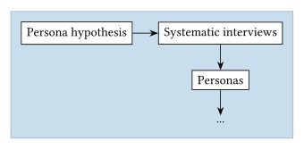
<figcaption class="paper-figure-caption"><b>Fig 1.</b> Figure 1: First phases (left) and corresponding activities (right) of the Goal-Directed Design process adapted from [11]. Personas are used in later phases to design user interfaces.</figcaption>
</figure>
<figure class="paper-figure-card">
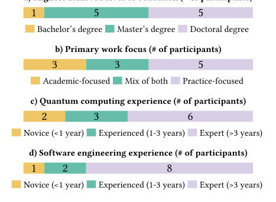
<figcaption class="paper-figure-caption"><b>Fig 2.</b> Figure 2: Demographics of QCE 2025 interviewees (𝑁= 11).</figcaption>
</figure>
<figure class="paper-figure-card">
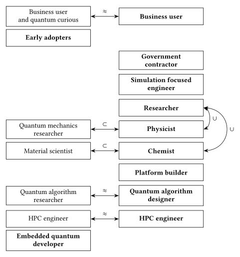
<figcaption class="paper-figure-caption"><b>Fig 3.</b> Figure 3: Mapping of Dagstuhl personas (left; Sec. 4) to inter- view personas (right; Sec. 5). 𝐴⊂𝐵means 𝐴was described more specialized than 𝐵. 𝐴≈𝐵means 𝐴and 𝐵were described in approximately same scope. Aggregated personas in bold.</figcaption>
</figure>
</div>
<p><strong>Summary.</strong> This work addresses the usability crisis in quantum software by conducting a stakeholder analysis to define user personas. By identifying diverse needs—ranging from business users to algorithm developers—it proposes a framework for designing software that correctly balances high-level abstraction with necessary hardware details. This is crucial for advancing the practical application of quantum computation.</p>
<p><strong>Why it may be interesting.</strong> While not focused on physical dynamics, the paper addresses the crucial engineering and usability challenges of quantum computing, which dictates how theoretical models (like Hamiltonians) can be practically implemented and utilized by different scientific communities.</p>
<details>
<summary>Detailed structure</summary>
<p><strong>Main problem.</strong> The core challenge is designing well-structured quantum software due to the rapid advancement of quantum hardware and the inherent complexity of quantum computing.</p>
<p><strong>Main result.</strong> The authors derived eleven distinct user and stakeholder personas, providing a common language to guide the creation of user-tailored quantum software.</p>
<p><strong>Method.</strong> The study employed a stakeholder-based analysis, combining insights from an expert focus group and qualitative interviews with quantum computing practitioners.</p>
<p><strong>Model / system.</strong> The focus is on the software layer interacting with quantum hardware, spanning from abstract quantum circuits and Hamiltonians to specific physical qubit architectures (short, mid, and long-term regimes).</p>
<p><strong>Key observables.</strong> The required level of abstraction, the functional goals of the user (e.g., scientific insight vs. business motive), and the necessary hardware details.</p>
<p><strong>Important parameters / regimes.</strong> Technological maturity stages (short-term, mid-term, long-term hardware capabilities) and the balance between abstraction level and hardware specificity.</p>
<p><strong>Assumptions / limitations.</strong> The derived personas are considered a 'persona-hypothesis' intended as a basis for future product development, and their applicability is limited to similar contexts.</p>
<p><strong>Figures summary.</strong> Figure 1 illustrates the Goal-Directed Design process phases. Figure 4 maps the identified personas across different layers of quantum software abstraction.</p>
<p><strong>Paper structure.</strong> The paper introduces the problem, details the methodology (focus groups/interviews), presents the resulting eleven personas categorized by use case and required abstraction level, and discusses the implications for software design.</p>
</details>
<details>
<summary>Abstract</summary>
<p>The advancement of quantum hardware and the intricacies of quantum computing make well-designed quantum software increasingly necessary. Due to the interdisciplinarity of the field, it is crucial to understand the perspectives and specific needs of involved stakeholders, for example, to balance the desired level of abstraction with the exposition of (hardware)-specific details. In this work, we conduct a stakeholder-based analysis to identify personas of quantum software as a means of creating meaningful, user-tailored quantum software. We conducted an expert focus group at a Dagstuhl seminar in 2024 and qualitative interviews with practitioners at conference IEEE QCE in 2025, from which we derive eleven personas of potential users and stakeholders for quantum software. We discuss these personas regarding their use cases, interests, constraints and abstraction level.</p>
</details>
<p><sub><a href="#top">↑ back to top</a></sub></p>

<p><a id="paper-2608.18248"></a></p>
<h3 id="learning-constructive-models-of-emergent-systems"><a href="http://arxiv.org/abs/2608.18248v1">Learning constructive models of emergent systems</a></h3>
<p><strong>Authors:</strong> Bipul Pandey, Caden Proctor, Vinay Ramanathan, Nico Roth, Arjun S. Raman<br>
<strong>Type:</strong> both · <strong>Category:</strong> disordered systems and neural networks · <strong>PDF:</strong> <a href="https://arxiv.org/pdf/2608.18248v1">https://arxiv.org/pdf/2608.18248v1</a><br>
<strong>Analysis basis:</strong> full PDF text, analyzed in chunks</p>
<div class="figure-strip-hint">↔ Scroll figures horizontally</div>
<div class="paper-figures-scroll">
<figure class="paper-figure-card">
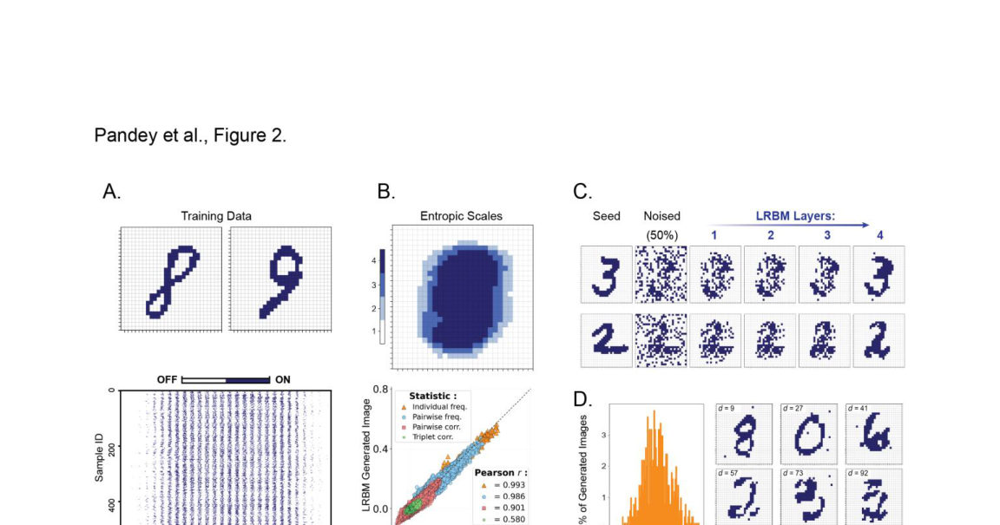
<figcaption class="paper-figure-caption"><b>Fig 1.</b> Figure 2. A constructive model for handwritten digits. (A) The ensemble comprises binarized 28 x 28 images of handwritten digits. Two examples are shown here (top). Each image is flattened to a binary feature vector in which every pixel is either OFF (white) or ON (blue), producing the sample-by-feature matrix used for training the LRBM (bottom). No labels of digit identity are included in the input data or used during the training process. (B) Top: the entropic scales of organization inferred from the ensemble with pixels colored according to their derived layer. Bottom: statistics of LRBM-generated images versus the training data. (C) Starting from a seed digit corrupted with 50% noise,...</figcaption>
</figure>
<figure class="paper-figure-card">
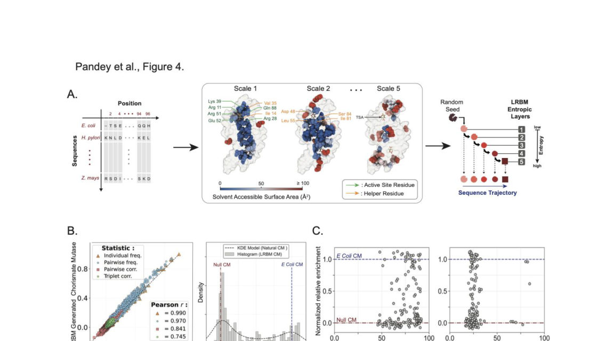
<figcaption class="paper-figure-caption"><b>Fig 2.</b> Figure 4. LRBM-based generation of synthetic chorismate mutase enzymes. (A) Construction of the chorismate mutase LRBM (CM-LRBM). Left: multiple sequence alignment of natural chorismate mutase homologs. Middle: positions assigned to entropic scales 1, 2, and 5 mapped onto the structure of E. coli CM (PDB: 1ECM) and rendered as spheres colored by solvent-accessible surface area. The bound transition-state analog is shown in stick representation. Green arrows mark active site residues (‘Active Site Residue’) and orange arrows mark residues around the active site known to effect catalytic activity (‘Helper Residue’). Right: schematic of LRBM-based CM generation. CM-LRBM comprised five layers;...</figcaption>
</figure>
<figure class="paper-figure-card">
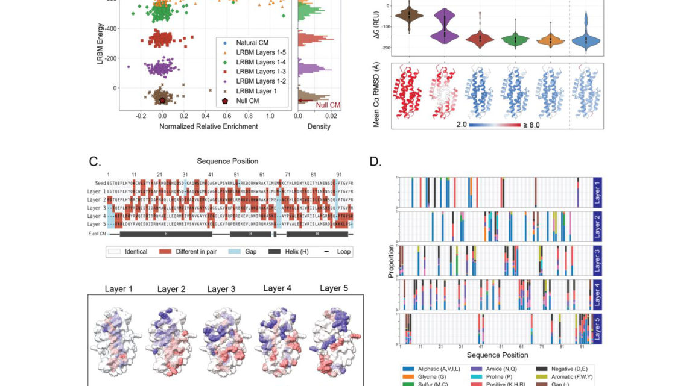
<figcaption class="paper-figure-caption"><b>Fig 3.</b> Figure 5. Layer-wise progression of energy, structure, and composition in constructive CM design. (A) Top: Distribution of normalized relative enrichment for all natural CMs in MSA (see Fig. 4A). Normalized relative enrichment plotted against LRBM energy for natural CM sequences (blue dots), the null CM sequence (red pentagon), and designed sequences generated by satisfying CM-LRBM layer 1 through layer 5 (colored dots). (B) Structural evaluation of constructed sequences from panel A and natural CMs in MSA by AlphaFold3 (top) and Rosetta (middle). Bottom panel shows overlay of predicted CM structures at each CM-LRBM layer colored by root-mean squared deviation of the backbone alpha carbon...</figcaption>
</figure>
</div>
<p><strong>Summary.</strong> This work introduces the Layer-Restricted Boltzmann Machine (LRBM) as a constructive framework for modeling emergent systems, inspired by statistical phylogenetics. By inferring and enforcing a unidirectional flow across hierarchical entropic scales, the LRBM successfully models structure in images, language, and critically, in enzyme sequences. The success in designing functional enzymes that retain fold but require all hierarchical layers for full function suggests a general, learnable statistical logic for complex system construction.</p>
<p><strong>Why it may be interesting.</strong> The concept of using hierarchical entropic constraints derived from statistical physics principles (like those used in analyzing disordered systems) to guide the construction of complex, functional biological architectures (like enzymes) suggests a universal organizing principle applicable beyond standard ML tasks.</p>
<details>
<summary>Detailed structure</summary>
<p><strong>Main problem.</strong> The paper addresses the lack of constructive logic in current AI models for building complex emergent systems, which typically arise through multi-scale interactions.</p>
<p><strong>Main result.</strong> The authors propose the Layer-Restricted Boltzmann Machine (LRBM), demonstrating that inferring and enforcing a unidirectional flow across hierarchical entropic scales provides a general, data-driven method for constructing emergent systems.</p>
<p><strong>Method.</strong> The methodology involves inferring discrete scales of entropy from an ensemble of existing data (e.g., natural enzymes) and constraining information flow sequentially across these scales to build the LRBM architecture.</p>
<p><strong>Model / system.</strong> The core model is the Layer-Restricted Boltzmann Machine (LRBM), which is applied to diverse systems including digit images, natural language, and the chorismate mutase (CM) enzyme sequence space. The system exhibits a clear hierarchy where lower layers capture global structure and higher layers refine fine-grained features.</p>
<p><strong>Key observables.</strong> Enzyme fold emergence, functional activity (bimodal activity), reconstruction fidelity from noise, and the block-structured parameter matrix of the LRBM.</p>
<p><strong>Important parameters / regimes.</strong> The number of discrete entropic scales (K), the coupling strength between adjacent layers, and the sequence divergence percentage for synthetic enzymes (up to 53%).</p>
<p><strong>Assumptions / limitations.</strong> The primary assumption is that the underlying generative process of an emergent system can be characterized solely by a hierarchical structure of entropic constraints.</p>
<p><strong>Figures summary.</strong> Figures illustrate the MNIST reconstruction process showing layer-by-layer refinement from global structure to local detail, and the LRBM structure derived from simulated and natural ensembles.</p>
<p><strong>Paper structure.</strong> The paper establishes the need for constructive models, proposes the LRBM based on statistical phylogenetics, validates the model on MNIST images, and culminates in a stringent test using the <em>in vivo</em> functional assay of synthetic chorismate mutase enzymes.</p>
</details>
<details>
<summary>Abstract</summary>
<p>Emergent systems - systems containing multi-scale interactions - often arise through iteration rather than explicit forward design. As such, design principles for building emergent systems have been under-explored. Current artificial intelligence architectures, while useful for generation, do not provide a logic for how to construct emergent systems. Inspired by statistical phylogenetics, we show that inferring scales of system entropy then explicitly constraining information flow from low to high entropic scales yields data-driven, stepwise 'constructive models' of emergent systems. We term the resulting architecture the Layer-Restricted Boltzmann Machine (LRBM). Applied identically to digit images, natural language, and enzyme sequences, LRBM models follow hierarchical logic: lower layers encode global structure from which higher layers encode fine-grained features. As a stringent experimental challenge for LRBM-based construction, we built and evaluated 160 constructive trajectories of synthetic and 1,130 natural chorismate mutase (CM) enzymes in an in vivo functional assay. Designed CMs functioned up to 53% sequence divergent from the nearest natural homolog. Notably, enzyme fold emerged at intermediate LRBM layers while function arose only upon satisfying all layers. Fold was therefore necessary but insufficient for function in this enzyme family. Our results suggest a shared hierarchical, learnable statistical logic for constructing emergent systems.</p>
</details>
<p><sub><a href="#top">↑ back to top</a></sub></p>

<p><a id="paper-2608.19033"></a></p>
<h3 id="molecular-implementation-of-the-machine-learned-skala-exchange-correlation-functional-in-cp2k-through-gauxc"><a href="http://arxiv.org/abs/2608.19033v1">Molecular Implementation of the Machine-Learned Skala Exchange-Correlation Functional in CP2K through GauXC</a></h3>
<p><strong>Authors:</strong> Franz Pöschel, Johann Pototschnig, Frederick Stein, Andreas Knüpfer, Thijs Vogels, Stefano Battaglia, Sebastian Ehlert, Jürg Hutter, Thomas D. Kühne<br>
<strong>Type:</strong> theory · <strong>Category:</strong> disordered systems and neural networks · <strong>PDF:</strong> <a href="https://arxiv.org/pdf/2608.19033v1">https://arxiv.org/pdf/2608.19033v1</a><br>
<strong>Analysis basis:</strong> full PDF text, analyzed in chunks</p>
<div class="figure-strip-hint">↔ Scroll figures horizontally</div>
<div class="paper-figures-scroll">
<figure class="paper-figure-card">
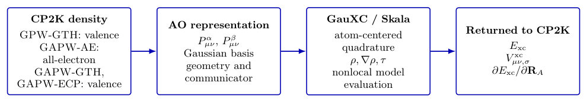
<figcaption class="paper-figure-caption"><b>Fig 1.</b> FIG. 1. Molecular CP2K–GauXC–Skala interface. The electronic Hamiltonian determines whether the AO density matrix represents the valence density of a pseudopotential or effective-core Hamiltonian or an all-electron density. GauXC constructs the molecular quadrature and model features and returns the XC energy, AO potential matrix, and nuclear derivatives to CP2K.</figcaption>
</figure>
<figure class="paper-figure-card">
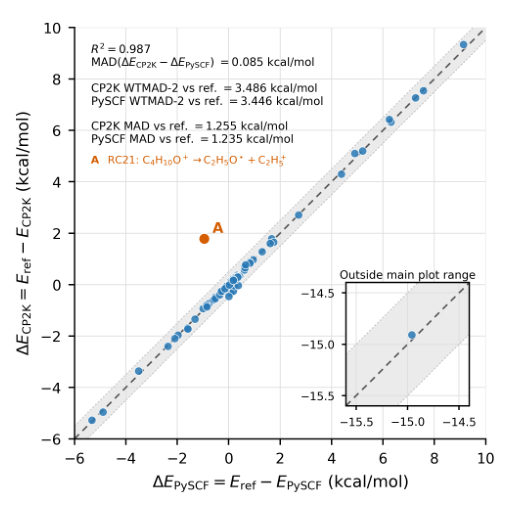
<figcaption class="paper-figure-caption"><b>Fig 2.</b> FIG. 2. Reaction-by-reaction correlation of the signed er- rors relative to the dietGMTKN55 reference energies obtained with CP2K/GauXC and the reference Skala implementa- tion. The dashed line denotes equality, the shaded gray area a cross-code discrepancy of ±0.5 kcal mol−1, and the inset shows the only datapoint outside the main plot range.</figcaption>
</figure>
</div>
<p><strong>Summary.</strong> This paper details the successful implementation of the machine-learned Skala exchange-correlation functional into the CP2K simulation code using the GauXC library. By creating a validated interface, the authors enable high-accuracy DFT calculations for molecular systems using ML potentials. This advances the field by bridging complex ML models with established quantum chemistry codes.</p>
<p><strong>Why it may be interesting.</strong> This work represents a significant advancement in computational materials science by integrating advanced machine learning potentials into established, production-level quantum simulation codes, improving accuracy while maintaining computational feasibility.</p>
<details>
<summary>Detailed structure</summary>
<p><strong>Main problem.</strong> The paper addresses the need to improve the accuracy of Kohn-Sham Density-Functional Theory (DFT) beyond traditional approximations without resorting to computationally expensive explicitly correlated methods.</p>
<p><strong>Main result.</strong> The authors successfully implemented the machine-learned Skala-1.1 exchange-correlation functional into the CP2K code via the GauXC library, achieving an aggregate mean absolute deviation on the dietGMTKN55 benchmark within 0.020 kcal/mol of the reference value.</p>
<p><strong>Method.</strong> The core method involves creating a robust interface (GauXC) that maps the learned functional's requirements onto CP2K's density representation, allowing the evaluation of XC energy, potential matrix, and derivatives.</p>
<p><strong>Model / system.</strong> The work is applied to molecular electronic structure calculations, using benchmark suites like dietGMTKN55 and testing on water-hexamer clusters, covering both all-electron and valence-only density representations.</p>
<p><strong>Key observables.</strong> XC energy ($E_{	ext{Skala}}^{	ext{xc}}$), AO XC potential matrix ($V_{  ext{Skala}}^{\mu
u, \sigma}$), nuclear derivatives (forces), and Mean Absolute Deviation (MAD) on benchmark sets.</p>
<p><strong>Important parameters / regimes.</strong> The benchmark accuracy is quantified by the MAD of $1.255 	ext{ kcal mol}^{-1}$ vs. the reference $1.235 	ext{ kcal mol}^{-1}$.</p>
<p><strong>Assumptions / limitations.</strong> The interface design isolates implementation errors from functional differences, and the primary focus is on the AO density matrix representation, excluding auxiliary Plane-Wave grid details.</p>
<p><strong>Figures summary.</strong> Figures summarize the division of labor between CP2K, GauXC, and Skala, and show representative derivative checks for the molecular GauXC interface.</p>
<p><strong>Paper structure.</strong> The paper details the formulation of the Skala-1.1 interface in CP2K via GauXC, validates the implementation by comparing against native PBE and finite-difference checks, and reports benchmark results on the dietGMTKN55 suite.</p>
</details>
<details>
<summary>Abstract</summary>
<p>Machine-learned exchange--correlation (XC) functionals offer a route to improve Kohn--Sham density-functional theory without incurring the cost of explicitly correlated electronic-structure methods. Their use in production simulation codes, however, requires a well-defined mapping between the learned model and the host-code density representation. We formulate and implement a Skala-1.1 interface in CP2K through the external GauXC library. CP2K supplies the geometry, Gaussian basis, spin-resolved atomic-orbital density matrix, and communicator, while GauXC evaluates the XC energy, atomic-orbital potential matrix, and available nuclear derivatives. The interface accepts both all-electron and valence-only density matrices. The latter may arise from separable dual-space pseudopotentials or molecular effective-core potentials. Implementation errors are isolated from functional differences by comparing the Perdew--Burke--Ernzerhof (PBE) functional evaluated through GauXC with native CP2K PBE. The resulting interface gives consistent energies, forces validated against finite-difference total-energy checks, and force-based molecular-virial diagnostics for representative molecular cases. The dietGMTKN55 benchmark suite is evaluated with an all-electron Gaussian augmented plane-wave treatment for elements up to bromine and def2 effective-core potentials for the heavier elements. The resulting aggregate mean absolute deviation of 1.255 kcal/mol is within 0.020 kcal/mol of the corresponding Skala reference value of 1.235 kcal/mol. This work establishes a validated molecular implementation of Skala in CP2K through GauXC.</p>
</details>
<p><sub><a href="#top">↑ back to top</a></sub></p>

<p><a id="paper-2608.18471"></a></p>
<h3 id="multicast-quantum-network-coding-as-optimal-symmetric-universal-cloning-over-a-quantum-network"><a href="http://arxiv.org/abs/2608.18471v1">Multicast quantum network coding as optimal symmetric universal cloning over a quantum network</a></h3>
<p><strong>Authors:</strong> Go Kato, Mio Murao, Masaki Owari<br>
<strong>Type:</strong> theory · <strong>Category:</strong> quantum information and computing · <strong>PDF:</strong> <a href="https://arxiv.org/pdf/2608.18471v1">https://arxiv.org/pdf/2608.18471v1</a><br>
<strong>Analysis basis:</strong> full PDF text, analyzed in chunks</p>
<div class="figure-strip-hint">↔ Scroll figures horizontally</div>
<div class="paper-figures-scroll">
<figure class="paper-figure-card">
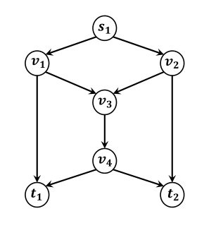
<figcaption class="paper-figure-caption"><b>Fig 1.</b> Fig. 1. Undirected butterfly network (left) and directed butterfly network (right): These networks have one source node s1, two terminal nodes t1 and t2, and three intermediate nodes v1, v2, and v3.</figcaption>
</figure>
</div>
<p><strong>Summary.</strong> This paper develops a quantum network coding protocol to achieve the perfect multicast of symmetric universal clones of unknown quantum states. By extending existing network coding techniques, the authors establish necessary and sufficient conditions based on graph connectivity (minimum cut) for this quantum information task. This work advances the theory of quantum communication by providing a robust method for state distribution in noisy or complex quantum network topologies.</p>
<p><strong>Why it may be interesting.</strong> It provides a concrete, information-theoretic framework for distributing quantum information (clones) across a network, which is fundamental to quantum communication protocols.</p>
<details>
<summary>Detailed structure</summary>
<p><strong>Main problem.</strong> The paper addresses the challenge of perfectly multicasting symmetric universal clones of unknown quantum states across a quantum network.</p>
<p><strong>Main result.</strong> It constructs a protocol showing that perfect multicast is achievable under specific graph connectivity conditions, extending previous quantum network coding results.</p>
<p><strong>Method.</strong> The authors extend the quantum network coding protocol by leveraging the structure of the underlying graph and utilizing concepts from classical network coding theory.</p>
<p><strong>Model / system.</strong> The system is a quantum network modeled by an undirected graph G, where edges represent noiseless q-dimensional quantum channels. Free classical communication is assumed to be available.</p>
<p><strong>Key observables.</strong> The achievable state on the terminal nodes, which is shown to be proportional to the initial input state tensor product with the cloning factor.</p>
<p><strong>Important parameters / regimes.</strong> The dimension of the input state (d_l), the size of the quantum channel alphabet (q, a prime power), and the minimum cut capacity of the derived directed graph G'.</p>
<p><strong>Assumptions / limitations.</strong> The analysis assumes the availability of free classical communication and relies on the existence of an acyclic directed graph G' derived from G that satisfies certain minimum cut conditions.</p>
<p><strong>Figures summary.</strong> Figure 1 illustrates the structure of the quantum network using an undirected and directed butterfly network example, showing source and terminal nodes.</p>
<p><strong>Paper structure.</strong> The paper builds upon classical network coding theory, extends it to the quantum domain for multi-source multicast, and provides a detailed proof confirming the solvability of the quantum multicast network coding problem for cloning.</p>
</details>
<details>
<summary>Abstract</summary>
<p>We study the problem of perfectly multicasting symmetric universal clones of unknown quantum states over quantum networks with free classical communication.   We construct a protocol that multicasts symmetric universal clones of input states from multiple source nodes by extending the quantum network coding protocol proposed by Kobayashi et al. We further establish a sufficient condition for perfect multicast in the single-source setting. Specifically, we show that when a single copy of a $q^r$-dimensional input state is available at the source node, where $q$ is a sufficiently large prime power, perfect multicast of the corresponding symmetric universal clone is achievable using a small amount of entanglement shared among the target nodes.   This result holds for quantum networks represented by an undirected graph $G$, where each edge corresponds to a noiseless $q$-dimensional quantum channel, provided that there exists an acyclic directed graph $G'$ obtained by assigning directions to the edges of $G$ such that the minimum cut of $G'$ is at least $r$.</p>
</details>
<p><sub><a href="#top">↑ back to top</a></sub></p>

<p><a id="paper-2608.18421"></a></p>
<h3 id="multiqubit-orthogonal-product-bases"><a href="http://arxiv.org/abs/2608.18421v1">Multiqubit orthogonal product bases</a></h3>
<p><strong>Authors:</strong> Yvkai Zhao, Lin Chen<br>
<strong>Type:</strong> theory · <strong>Category:</strong> quantum information and computing · <strong>PDF:</strong> <a href="https://arxiv.org/pdf/2608.18421v1">https://arxiv.org/pdf/2608.18421v1</a><br>
<strong>Analysis basis:</strong> full PDF text, analyzed in chunks</p>
<div class="figure-strip-hint">↔ Scroll figures horizontally</div>
<div class="paper-figures-scroll">
<figure class="paper-figure-card">
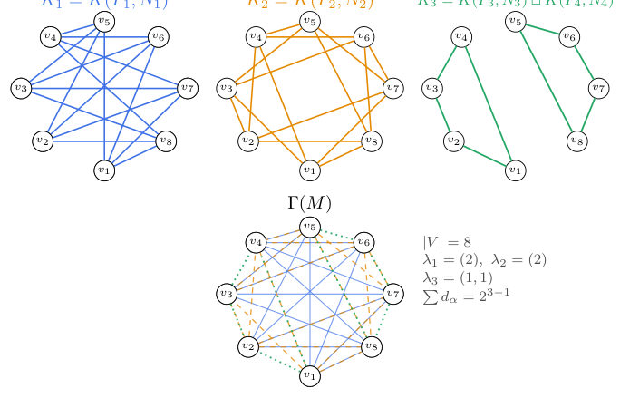
<figcaption class="paper-figure-caption"><b>Fig 1.</b> Figure 1: The three color layers of the example and the merged edge-colored complete multigraph Γ(M) on V = {1, . . . , 8}. The three layers are drawn in blue (solid), orange (dashed), and green (dotted), respectively.</figcaption>
</figure>
<figure class="paper-figure-card">
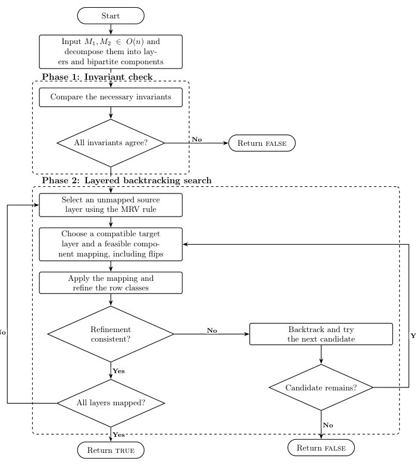
<figcaption class="paper-figure-caption"><b>Fig 2.</b> Figure 2: Flowchart of the two-phase equivalence-testing algorithm. Phase 1 checks necessary invariants, and Phase 2 performs the exact layered backtracking search.</figcaption>
</figure>
</div>
<p><strong>Summary.</strong> This paper tackles the classification of complete orthogonal product bases (OPBs) for $n$-qubit systems by mapping the problem onto graph isomorphism. The authors prove that equivalence is determined by the isomorphism of an associated edge-colored multigraph. They derive bounds showing the number of such bases grows doubly exponentially and present a complex, two-phase algorithm to test for equivalence.</p>
<p><strong>Why it may be interesting.</strong> The rigorous mathematical characterization of quantum state bases and the development of an algorithm to test equivalence are fundamental theoretical tools applicable to understanding quantum resource theories and quantum circuit complexity.</p>
<details>
<summary>Detailed structure</summary>
<p><strong>Main problem.</strong> The primary goal is to classify all complete orthogonal product bases (OPBs) for an $n$-qubit system up to natural equivalence.</p>
<p><strong>Main result.</strong> The classification problem is reduced to determining the isomorphism of associated edge-colored complete multigraphs, and the number of equivalence classes $a_n$ exhibits doubly exponential growth, $a_n = 2^{2^{n+o(n)}}$.</p>
<p><strong>Method.</strong> The authors utilize a formal-matrix formalism, mapping the OPB matrix to a multigraph, and developing a two-phase algorithm combining invariant checking with a layered isomorphism search to test equivalence.</p>
<p><strong>Model / system.</strong> The system is an $n$-qubit quantum system, mathematically modeled by an OPB formal matrix $M \in O(n)$. This matrix is associated with an edge-colored complete multigraph $\Gamma(M)$ on $2n$ vertices.</p>
<p><strong>Key observables.</strong> The spectrum $\pi(M)$ (part sizes $d_\alpha$), the multiset of column spectra $\{\pi_j(M)\}$, and the multiset of edge multiplicities $\{\mu(r, s)\}$ are key invariants used for comparison.</p>
<p><strong>Important parameters / regimes.</strong> The number of qubits $n$, the number of variables $v$ (bounded by $2n-1$), and the size of the vertex set $N=2n$.</p>
<p><strong>Assumptions / limitations.</strong> The equivalence of two OPB matrices is rigorously proven to be equivalent to the isomorphism of their associated multigraphs.</p>
<p><strong>Figures summary.</strong> Figure 1 illustrates the multigraph construction for a 3-qubit OPB, and Figure 2 provides a flowchart summarizing the two-phase equivalence-testing algorithm.</p>
<p><strong>Paper structure.</strong> The paper establishes the formal-matrix formalism, proves the equivalence theorem linking OPB equivalence to graph isomorphism, derives bounds and asymptotics for the number of classes $a_n$, and concludes with the description and complexity analysis of the two-phase equivalence testing algorithm.</p>
</details>
<details>
<summary>Abstract</summary>
<p>We study complete orthogonal product bases (OPBs) of an $n$-qubit system via the formal-matrix formalism for multiqubit OPBs. To each OPB formal matrix we associate an edge-colored complete multigraph, and we prove that two formal matrices are equivalent if and only if their multigraphs are isomorphic, thereby reducing the classification of OPBs to graph isomorphism. Via subcube partitions and a lemma of Tarsi, we upper bound the number of variables by $2^n - 1$. We also study lower and upper bounds on the number $a_n$ of equivalence classes of $n$-qubit OPBs, by showing that $\binom{a_{n-1}+1}{2} \le a_n \le B_{2^{n-1}}^n$, where $B_m$ denotes the number of partitions of an $m$-element set. These bounds yield the asymptotic behavior $a_n = 2^{2^{n+o(n)}}$. Finally, we obtain a two-phase algorithm that decides whether two OPB formal matrices are equivalent, together with its correctness proof and complexity analysis. The complexity is exponential in the worst case.</p>
</details>
<p><sub><a href="#top">↑ back to top</a></sub></p>

<p><a id="paper-2608.18784"></a></p>
<h3 id="on-the-quantum-communication-complexity-of-total-functions"><a href="http://arxiv.org/abs/2608.18784v1">On the quantum communication complexity of total functions</a></h3>
<p><strong>Authors:</strong> Dmytro Gavinsky<br>
<strong>Type:</strong> theory · <strong>Category:</strong> quantum information and computing · <strong>PDF:</strong> <a href="https://arxiv.org/pdf/2608.18784v1">https://arxiv.org/pdf/2608.18784v1</a><br>
<strong>Analysis basis:</strong> full PDF text, analyzed in chunks</p>
<div class="figure-strip-hint">↔ Scroll figures horizontally</div>
<div class="paper-figures-scroll">
<figure class="paper-figure-card">
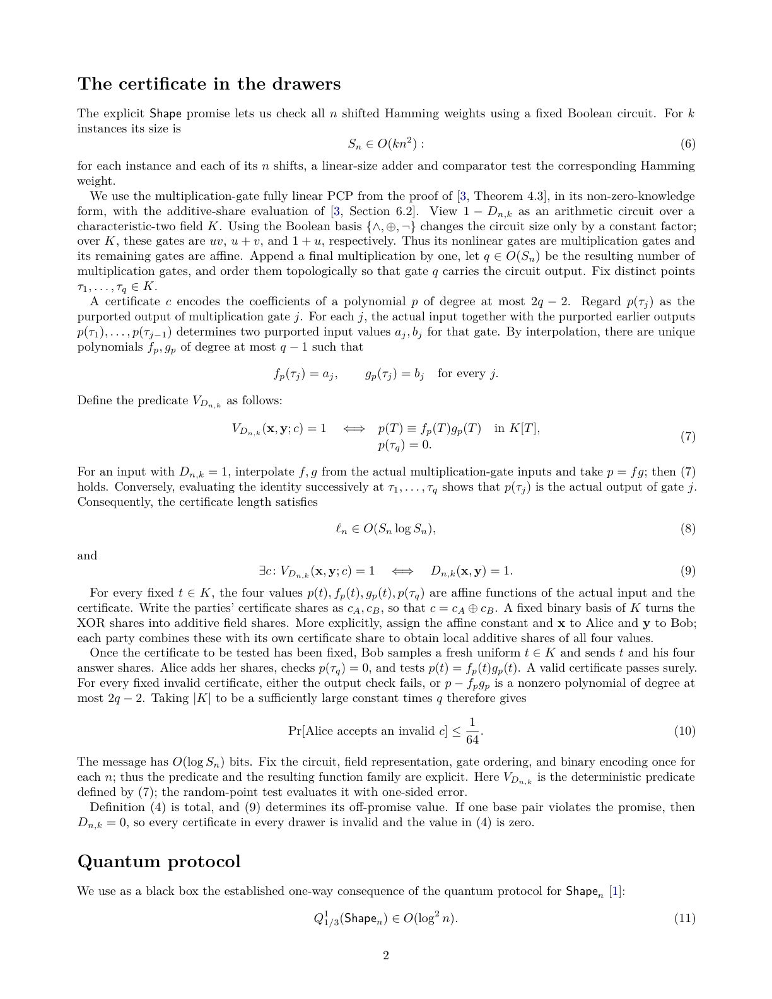
<figcaption class="paper-figure-caption"><b>Fig 1.</b> Low-resolution page preview, page 2</figcaption>
</figure>
<figure class="paper-figure-card">
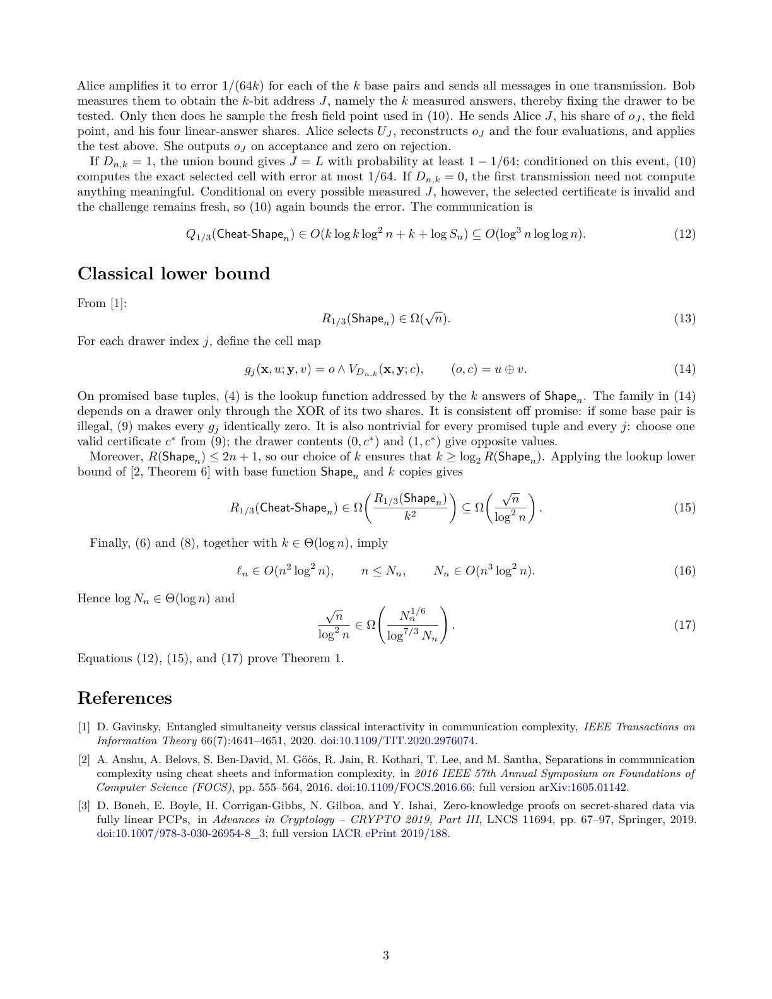
<figcaption class="paper-figure-caption"><b>Fig 2.</b> Low-resolution page preview, page 3</figcaption>
</figure>
</div>
<p><strong>Summary.</strong> This paper constructs a specific total Boolean function, Cheat-Shapen, to demonstrate a separation between quantum and classical communication complexity. It achieves a polylogarithmic quantum communication protocol while requiring a super-polynomial randomized protocol. This highlights the computational power of quantum communication protocols for certain tasks.</p>
<p><strong>Why it may be interesting.</strong> This work provides a concrete, information-theoretic example of quantum advantage in communication complexity, which is a fundamental area of quantum information theory.</p>
<details>
<summary>Detailed structure</summary>
<p><strong>Main problem.</strong> The paper aims to construct a total Boolean function that demonstrates a significant separation between its quantum communication complexity and its classical randomized communication complexity.</p>
<p><strong>Main result.</strong> The authors present a function, Cheat-Shapen, with a polylogarithmic two-message quantum communication protocol, while its randomized communication complexity is shown to be super-polynomial in the input size.</p>
<p><strong>Method.</strong> The construction combines three elements: the shifted approximate equality problem (Shape), a communication cheat-sheet construction, and a fully linear PCP derived from multiplication gates.</p>
<p><strong>Model / system.</strong> The analysis is based on the communication complexity of a specific total Boolean function, Cheat-Shapen, which is defined using multiple instances of the Shape problem.</p>
<p><strong>Key observables.</strong> Quantum communication complexity ($    ext{Q}<em 1_3="1/3">{1/3}(   ext{Cheat-Shapen}) \in O(\log^3 n \log \log n)$) and randomized communication complexity ($   ext{R}</em> N_n)$).}(   ext{Cheat-Shapen}) \in \Omega(rac{N_n}{6} \sqrt{n} \log^{7/3</p>
<p><strong>Important parameters / regimes.</strong> The input size parameters $n$ and $k$, and the total input size $N_n = 2nk + M(1 + \ell_n)$.</p>
<p><strong>Assumptions / limitations.</strong> The quantum protocol relies on an established one-way consequence for the Shape problem, and the PCP construction requires viewing $1 - D_{n,k}$ as an arithmetic circuit over a characteristic-two field.</p>
<p><strong>Paper structure.</strong> The paper proves Theorem 1 by combining the derived quantum protocol bound (Equation 12) with the established classical lower bound (Equations 15 and 17).</p>
</details>
<details>
<summary>Abstract</summary>
<p>We present a total function with a polylogarithmic two-message quantum protocol, whereas every randomised protocol, even with arbitrarily many rounds, requires polynomial communication.</p>
</details>
<p><sub><a href="#top">↑ back to top</a></sub></p>

<p><a id="paper-2608.19103"></a></p>
<h3 id="quantum-circuit-optimization-using-deep-reinforcement-learning-applications-across-multiple-gate-sets"><a href="http://arxiv.org/abs/2608.19103v1">Quantum circuit optimization using deep reinforcement learning: Applications across multiple gate sets</a></h3>
<p><strong>Authors:</strong> Khoa Dang Tao, Sumin Jin, Muhammad Raza, Changhyoup Lee<br>
<strong>Type:</strong> theory · <strong>Category:</strong> quantum information and computing · <strong>PDF:</strong> <a href="https://arxiv.org/pdf/2608.19103v1">https://arxiv.org/pdf/2608.19103v1</a><br>
<strong>Analysis basis:</strong> full PDF text, analyzed in chunks</p>
<div class="figure-strip-hint">↔ Scroll figures horizontally</div>
<div class="paper-figures-scroll">
<figure class="paper-figure-card">
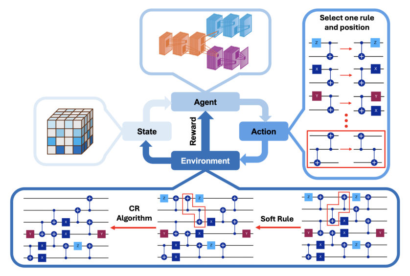
<figcaption class="paper-figure-caption"><b>Fig 1.</b> FIG. 1. Overview of the integrated reinforcement learning framework. The diagram illustrates the closed-loop interaction between the Actor–Critic agent and the environment.</figcaption>
</figure>
<figure class="paper-figure-card">
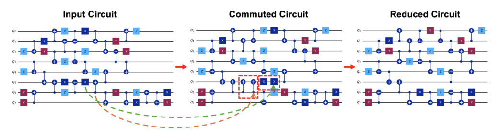
<figcaption class="paper-figure-caption"><b>Fig 2.</b> FIG. 2. The two-phase execution of the Commutation-and-Reduction algorithm. The input circuit contains a disordered distribution of gates. Dashed arrows trace representative gates during the commutation phase: X, Y, and Z gates propagate rightward, while a CNOT propagates leftward. The exposed X-X and CNOT-CNOT pairs (red box) cancel to the identity (I) in the reduction phase, producing the reduced circuit.</figcaption>
</figure>
<figure class="paper-figure-card">
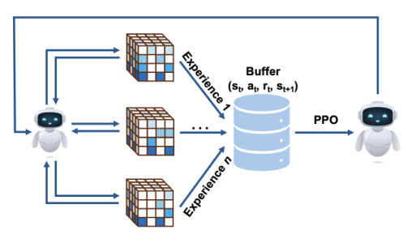
<figcaption class="paper-figure-caption"><b>Fig 3.</b> FIG. 4. Schematic of the distributed experience collection and training pipeline. Multiple environments generate diverse circuit optimization trajectories, which are stored as transi- tion tuples (st, at, rt, st+1) in a centralized experience replay buffer. The buffered transitions are then sampled in shuffled mini-batches to train the policy with PPO.</figcaption>
</figure>
<figure class="paper-figure-card">
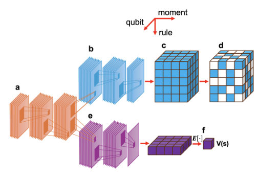
<figcaption class="paper-figure-caption"><b>Fig 4.</b> FIG. 3. The Actor-Critic network architecture for quantum circuit optimization. (a) The shared convolutional backbone that extracts local spatio-temporal features. (b-c) The Actor (policy) branch, which generates a logit tensor of shape Q × M × A. (d) The application of the binary validity mask to ensure permissible action selection. (e-f) The Critic (value) branch, which aggregates features to produce a scalar state- value estimate V (s).</figcaption>
</figure>
<figure class="paper-figure-card">
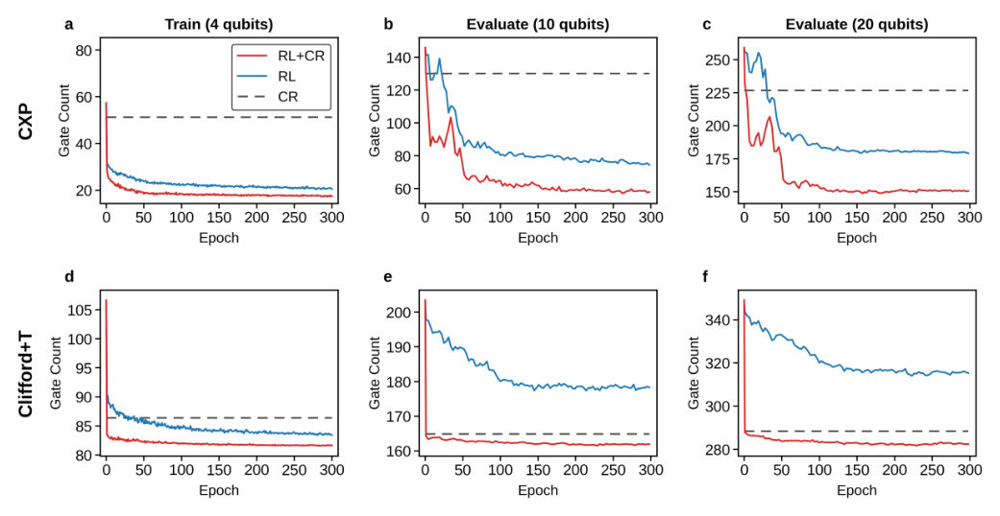
<figcaption class="paper-figure-caption"><b>Fig 5.</b> FIG. 5. Training and evaluation learning curves for quantum circuit optimization. The top row (a–c) displays results for the CXP basis, while the bottom row (d–f) displays results for the Clifford+T basis. Column (a, d) represents the 4-qubit training circuits, while columns (b, e) and (c, f) demonstrate generalization to 10-qubit and 20-qubit circuits, respectively. In every panel, the RL-CR agent (blue) is compared against the standard RL agent (red) and the CR baseline (dash-dotted black). The vertical axis represents the average gate count, and the horizontal axis represents the training epochs.</figcaption>
</figure>
</div>
<p><strong>Summary.</strong> This paper introduces a novel reinforcement learning framework that enhances quantum circuit optimization by integrating a deterministic Commutation-and-Reduction (CR) algorithm. By offloading elementary error corrections to the CR routine, the RL agent focuses its learning capacity on complex structural improvements. The resulting RL+CR method achieves state-of-the-art circuit compression, outperforming existing methods on simulated quantum hardware.</p>
<p><strong>Why it may be interesting.</strong> This work directly addresses the practical compilation and optimization bottleneck in quantum computing, providing a data-driven tool to make quantum algorithms more robust for near-term hardware.</p>
<details>
<summary>Detailed structure</summary>
<p><strong>Main problem.</strong> The primary challenge is optimizing quantum circuits to reduce gate count and depth to mitigate errors caused by decoherence on NISQ devices.</p>
<p><strong>Main result.</strong> The proposed RL+CR framework significantly outperforms standard RL agents and even state-of-the-art transpilers, achieving substantial gate and depth reductions across multiple gate sets.</p>
<p><strong>Method.</strong> A reinforcement learning agent is trained within an environment that deterministically applies a Commutation-and-Reduction (CR) algorithm after every action, allowing the agent to focus on non-trivial optimizations.</p>
<p><strong>Model / system.</strong> The system is modeled by quantum circuits implemented on near-term quantum hardware, tested across two gate sets: the universal Clifford+T basis and the CNOT+Pauli basis.</p>
<p><strong>Key observables.</strong> Gate count reduction percentage, circuit depth reduction percentage, and the final optimized circuit structure.</p>
<p><strong>Important parameters / regimes.</strong> The optimization is evaluated across varying qubit numbers (e.g., up to 20 qubits) and involves hyperparameters like learning rates and discount factors for the PPO algorithm.</p>
<p><strong>Assumptions / limitations.</strong> The core assumption is that deterministic rules (handled by CR) can be separated from the complex, non-trivial optimizations that require machine learning.</p>
<p><strong>Figures summary.</strong> Figures illustrate the RL framework loop, the two-phase CR execution, and comparative learning curves showing RL+CR's superior performance over standard RL and CR baselines across different qubit counts.</p>
<p><strong>Paper structure.</strong> The paper introduces the problem, details the RL+CR methodology (including the CR algorithm and the PPO formulation), presents rigorous comparisons against baselines (including Qiskit), and concludes with performance metrics across various circuit sizes and bases.</p>
</details>
<details>
<summary>Abstract</summary>
<p>The practical implementation of quantum algorithms on noisy intermediate-scale quantum devices encounters operational limitations due to decoherence and other sources of noise inherent in real hardware. To mitigate these errors while preserving the original functionality of the algorithm, shorter quantum circuits are therefore preferred. This motivates the development of effective quantum circuit optimization algorithms. Learning-based approaches have emerged as a leading candidate, yet existing autonomous agents remain inefficient, spending most of their training capacity rediscovering elementary reductions that deterministic rule-based methods already handle reliably. To address this challenge, we propose a reinforcement learning framework that embeds a deterministic Commutation-and-Reduction (CR) algorithm directly into the training environment. After every agent action, the CR algorithm automatically resolves elementary commutations and cancellations, enabling the agent to focus its learning capacity on the non-trivial optimizations where reinforcement learning adds real value. Empirical evaluation across two gate sets, the universal Clifford+T basis and the CNOT+Pauli basis, shows that RL+CR produces shorter circuits than a standard RL agent at all tested scales. We demonstrate that RL trained on smaller quantum circuits can be applied to larger quantum circuits. On 20-qubit Clifford+T circuits, five times larger than the training circuits, RL+CR removes twice as many gates as standard RL. This work provides a robust approach that could accelerate the compilation and optimization processes for future fault-tolerant and utility-scale quantum systems.</p>
</details>
<p><sub><a href="#top">↑ back to top</a></sub></p>

<p><a id="paper-2608.19158"></a></p>
<h3 id="quantum-speedups-require-structure-or-depth"><a href="http://arxiv.org/abs/2608.19158v1">Quantum Speedups Require Structure or Depth</a></h3>
<p><strong>Authors:</strong> Guy Blanc, Jordan Docter, Carmen Strassle, Li-Yang Tan<br>
<strong>Type:</strong> theory · <strong>Category:</strong> quantum information and computing · <strong>PDF:</strong> <a href="https://arxiv.org/pdf/2608.19158v1">https://arxiv.org/pdf/2608.19158v1</a><br>
<strong>Analysis basis:</strong> full PDF text, analyzed in chunks</p>
<div class="figure-strip-hint">↔ Scroll figures horizontally</div>
<div class="paper-figures-scroll">
<figure class="paper-figure-card">
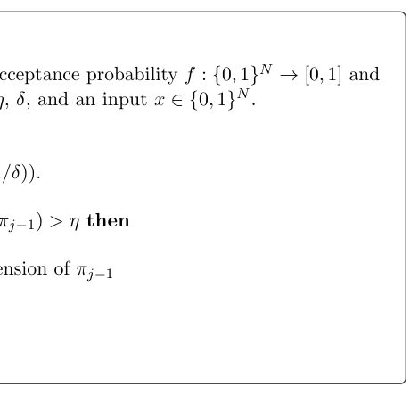
<figcaption class="paper-figure-caption"><b>Fig 1.</b> Figure 3: A classical query algorithm for approximating a quantum query algorithm.</figcaption>
</figure>
</div>
<p><strong>Summary.</strong> This theoretical paper analyzes the fundamental limits of quantum speedup by examining the simulation conjecture. It proves that for unstructured problems, achieving superpolynomial speedups requires quantum circuits of significant depth, suggesting that most known quantum advantages stem from exploiting problem structure. The work uses query weight analysis to establish these bounds.</p>
<p><strong>Why it may be interesting.</strong> While focused on complexity theory, the techniques developed for bounding quantum query complexity and relating it to circuit depth are fundamental tools applicable to understanding resource limitations in quantum simulation protocols.</p>
<details>
<summary>Detailed structure</summary>
<p><strong>Main problem.</strong> The paper investigates the conditions under which quantum algorithms can achieve superpolynomial speedups over classical computation, formalized by the simulation conjecture.</p>
<p><strong>Main result.</strong> The authors show that for parallel quantum algorithms, the simulation conjecture fails for unstructured problems unless the quantum circuits possess superconstant depth, contrasting with known speedups for structured problems.</p>
<p><strong>Method.</strong> The analysis employs query weight analysis (a 'whitebox' approach) to derive lower bounds on the query complexity, contrasting it with influence-based methods.</p>
<p><strong>Model / system.</strong> The focus is on quantum query algorithms, analyzing the query weight allocation ($W_i(x)$) of a $t$-query, $d$-round quantum algorithm $A$ for a function $F: \{0, 1\}^N 	o \{0, 1, *\}$.</p>
<p><strong>Key observables.</strong> Query weights ($W_i(x)$), acceptance probability ($f(x)$), and the $\delta$ parameter quantifying the separation of acceptance probabilities.</p>
<p><strong>Important parameters / regimes.</strong> Query depth ($d$), parallel queries per round ($t$), and the separation parameter $\delta$.</p>
<p><strong>Assumptions / limitations.</strong> The results heavily rely on the strong version of Conjecture 1, which relates query weights to the simulation conjecture, and the Aaronson–Ambainis conjecture.</p>
<p><strong>Figures summary.</strong> Figure 1 illustrates the structure of a $t$-query $d$-round quantum algorithm, which is central to the complexity analysis.</p>
<p><strong>Paper structure.</strong> The paper progresses by introducing the simulation conjecture, developing the query weight framework (Conjecture 1), proving simulation bounds for parallel algorithms (Theorem 1), and establishing equivalences between random-oracle and unrelativized complexity separations (Theorems 2 and 3).</p>
</details>
<details>
<summary>Abstract</summary>
<p>One of the most basic conjectures in quantum complexity theory states that every $t$-query quantum algorithm can be simulated on most inputs by a $\mathrm{poly}(t)$-query classical algorithm. If true, this would provide broad justification for the need for structure in quantum speedups.   We settle this conjecture for parallel quantum algorithms, showing that every $t$-query $d$-round quantum algorithm can be simulated on most inputs with $t^{O(d^2)}$ classical queries. This suggests that for unstructured problems, superpolynomial speedups would require quantum circuits of superconstant depth, and exponential speedups would further require polynomial depth. In contrast, most known speedups for structured problems are achieved by highly parallel, low-depth algorithms.   Our techniques also carry new implications for the status of $\mathsf{BPP}$ vs. $\mathsf{BQP}$ relative to a random oracle, a similarly longstanding problem.</p>
</details>
<p><sub><a href="#top">↑ back to top</a></sub></p>

<p><a id="paper-2608.19094"></a></p>
<h3 id="realizing-logical-diagonal-gates-via-transversal-physical-math703math-rotations-in-css-codes"><a href="http://arxiv.org/abs/2608.19094v1">Realizing Logical Diagonal Gates via Transversal Physical $Z$-Rotations in CSS Codes</a></h3>
<p><strong>Authors:</strong> K. Sai Mineesh Reddy, Navin Kashyap<br>
<strong>Type:</strong> theory · <strong>Category:</strong> quantum information and computing · <strong>PDF:</strong> <a href="https://arxiv.org/pdf/2608.19094v1">https://arxiv.org/pdf/2608.19094v1</a><br>
<strong>Analysis basis:</strong> full PDF text, analyzed in chunks</p>
<div class="figure-strip-hint">↔ Scroll figures horizontally</div>
<div class="paper-figures-scroll">
<figure class="paper-figure-card">
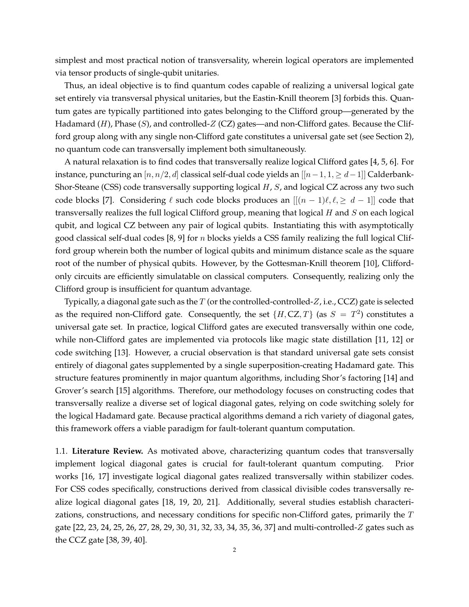
<figcaption class="paper-figure-caption"><b>Fig 1.</b> Low-resolution page preview, page 2</figcaption>
</figure>
<figure class="paper-figure-card">

<figcaption class="paper-figure-caption"><b>Fig 2.</b> Low-resolution page preview, page 3</figcaption>
</figure>
<figure class="paper-figure-card">

<figcaption class="paper-figure-caption"><b>Fig 3.</b> Low-resolution page preview, page 4</figcaption>
</figure>
<figure class="paper-figure-card">

<figcaption class="paper-figure-caption"><b>Fig 4.</b> Low-resolution page preview, page 5</figcaption>
</figure>
<figure class="paper-figure-card">

<figcaption class="paper-figure-caption"><b>Fig 5.</b> Low-resolution page preview, page 6</figcaption>
</figure>
</div>
<p><strong>Summary.</strong> This paper characterizes CSS quantum error-correcting codes that can implement logical diagonal gates using transversal physical Z-rotations. It introduces a powerful 'appending construction' that allows researchers to systematically extend any given code to support an arbitrary number of desired logical Z-rotations. This advances the theory of fault-tolerant quantum computation by providing a scalable method for code design.</p>
<p><strong>Why it may be interesting.</strong> This work provides a concrete, constructive framework for building quantum codes capable of implementing complex, non-Clifford logical gates required for universal quantum computation, which is a core theoretical challenge in quantum information.</p>
<details>
<summary>Detailed structure</summary>
<p><strong>Main problem.</strong> The paper addresses the challenge of designing quantum error-correcting codes (CSS codes) that can fault-tolerantly implement a diverse set of logical diagonal gates using only transversal physical Z-rotations.</p>
<p><strong>Main result.</strong> The authors develop an 'appending construction' that allows extending any existing CSS code to support multiple desired logical Z-rotations, although this increases the physical qubit overhead.</p>
<p><strong>Method.</strong> The methodology involves characterizing the necessary conditions for transversal physical Z-rotations to realize specific logical gates, leading to the development of the systematic appending construction.</p>
<p><strong>Model / system.</strong> The system modeled is the quantum error-correcting code, specifically Calderbank-Shor-Steane (CSS) codes defined by nested classical codes $C_2 \subseteq C_1$. The operations are physical transversal Z-rotations.</p>
<p><strong>Key observables.</strong> Code parameters $[[n, k, d]]$, the realizable logical diagonal gates (e.g., single-qubit or multi-controlled-Z rotations), and the associated physical transversal rotation parameters $(p, w)$.</p>
<p><strong>Important parameters / regimes.</strong> The number of appended qubits ($n''$), the number of target logical gates, and the required fidelity/distance of the resulting code.</p>
<p><strong>Assumptions / limitations.</strong> The analysis is restricted to gates realizable via transversal physical Z-rotations, which limits the achievable logical gates to specific diagonal forms.</p>
<p><strong>Paper structure.</strong> The paper first characterizes which CSS codes can realize target logical gates via transversal Z-rotations, establishing limitations. It then introduces and details the 'appending construction' to systematically extend codes to support multiple gates, followed by detailed mathematical proofs concerning the necessary and sufficient conditions for gate realization.</p>
</details>
<details>
<summary>Abstract</summary>
<p>Calderbank-Shor-Steane (CSS) codes, constructed from nested classical codes $C_2 \subseteq C_1$, are typically optimized for good code parameters. However, practical quantum computing equally demands fault-tolerant logical gates. In this work, we characterize nested pairs $(C_1, C_2)$ whose resulting CSS codes realize a target logical diagonal gate via transversal physical $Z$-rotations. In doing so, we recover a result of Camps-Moreno et al. that CSS codes can realize only logical single-qubit $Z$-rotations and multi-qubit controlled-$Z$ rotations via transversal physical $Z$-rotations. Building on our characterization, we develop the ''appending construction'', that takes as input an $[[n',k']]$ CSS code $Q'$ and a target logical $Z$-rotation (single-qubit or multi-controlled) $U_L$, and extends $Q'$ by systematically appending $n''$ physical qubits to obtain an $[[n,k]]$ CSS code $Q$ with $n = n'+n''$ and $k=k'$. The target logical gate $U_L$ is realized in $Q$ by applying a well-chosen physical transversal $Z$-rotation to the $n''$ appended physical qubits. The CSS code $Q$ may incur a loss in minimum distance, but the loss can be controlled through the parameter choices made in the construction. By repeatedly applying the appending construction, we can extend any CSS code $Q'$ to obtain a CSS code $Q$ that supports fault-tolerant implementations of multiple desired logical $Z$-rotations. The cost to be paid for this is the increased physical qubit overhead as the number of target logical gates grows.</p>
</details>
<p><sub><a href="#top">↑ back to top</a></sub></p>

<p><a id="paper-2608.18483"></a></p>
<h3 id="superfast-hole-spin-qubits-enabled-by-uniaxial-strain-boosted-spin-orbit-coupling"><a href="http://arxiv.org/abs/2608.18483v1">Superfast hole spin qubits enabled by uniaxial strain-boosted spin-orbit coupling</a></h3>
<p><strong>Authors:</strong> Yi-Xu Wang, Yang Liu, Shan Guan, Jun-Wei Luo, Shu-Shen Li<br>
<strong>Type:</strong> theory · <strong>Category:</strong> quantum information and computing · <strong>PDF:</strong> <a href="https://arxiv.org/pdf/2608.18483v1">https://arxiv.org/pdf/2608.18483v1</a><br>
<strong>Analysis basis:</strong> full PDF text, analyzed in chunks</p>
<div class="figure-strip-hint">↔ Scroll figures horizontally</div>
<div class="paper-figures-scroll">
<figure class="paper-figure-card">

<figcaption class="paper-figure-caption"><b>Fig 1.</b> FIG. 1. Comparison of single-qubit gate fidelity and operation speed across scalable qubit platforms (2020 - 2026). Reported results are shown for superconducting qubits30,31, trapped ions32, neutral atoms33, nitrogen-vacancy (NV) centers in diamond34, and semiconductor spin qubits35–37. Hole spin qubits hosted by Ge Nanowires (NW)38 exhibit sizable operation speed, although the gate fidelity was not reported and is therefore assumed to lie below the surface-code threshold of 99%. This work presented superfast hole spin qubit (marked by the red star) is plotted using the operation speed at the “sweet spot” (uniaxial strain of ϵu = 0.2% along the [110] direction, biaxial strain of ϵb =...</figcaption>
</figure>
<figure class="paper-figure-card">

<figcaption class="paper-figure-caption"><b>Fig 2.</b> FIG. 2. CMOS-compatible strain engineering substantially enhances linear SOC. (a) Strain-engineering in CMOS technology to enhance hole mobility by embedding larger-lattice SiGe alloy in the source and drain regions, generating a compressive [110] uniaxial strain in the Si channel. (b) Analogous CMOS-compatible strain-engineering approach to apply uniaxial strain to Ge/SiGe QW hosting spin qubit arrays by embedding alloy in the source and drain regions. BS, BD, and BC denote the source, drain, and center barrier gates; P1 and P2 denote the plunger gates23. (c) Schematic of linear-SOC-mediated EDSR in a planar QD array. The uniaxial strain and magnetic field are applied along the x′=[110]...</figcaption>
</figure>
<figure class="paper-figure-card">

<figcaption class="paper-figure-caption"><b>Fig 3.</b> Fig. 2d shows that HH1 possesses two spin branches with an increased energy separation as the in-plane wavevector k|| goes away from the Γ point, which is re- ferred to as momentum-dependent spin splitting. Fig. 2e shows the corresponding spin splitting of HH1 as a func- tion of k along [110] and [110] directions, respectively. One can see that the spin splitting is predominantly k- linear, consistent with the predictions of the newly dis- covered direct Rashba SOC58,63, which originates from the interplay between HH-LH mixing and the direct dipo- lar coupling of an external electric field to the hole sub-</figcaption>
</figure>
<figure class="paper-figure-card">

<figcaption class="paper-figure-caption"><b>Fig 4.</b> FIG. 3. Strain engineering significantly boosts gate speed in planar Ge hole spin qubits. (a) Estimated EDSR Rabi frequency fR based on obtained α1 and α2 as a function of uniaxial strain for the strain configurations adopted in Fig. 2g. (b) The corresponding effective mass my′ as a function of uniaxial strain. (c) Estimated EDSR Rabi frequency fR as a function of biaxial strain for the strain con- figurations adopted in Fig. 2h. (d) Estimated Rabi frequency fR as a function of uniaxial strain for the strain configurations adopted in Fig. 2i.</figcaption>
</figure>
<figure class="paper-figure-card">

<figcaption class="paper-figure-caption"><b>Fig 5.</b> FIG. 4. Small biaxial strain enables low electric field for “sweet spots”. Linear SOC parameters |α1 −α2| as a function of electric field Ez and uniaxial strain ϵu along the [110] direction under two different fixed biaxial strain: (a) ϵb = −0.61%, and (b) ϵb = −0.1%. The linear SOC param- eters |α1 −α2| are normalized to their maximum value for each uniaxial strain to highlight relative changes and “sweet spots”. Green points indicate the estimated locations of the “sweet spots”, where the linear SOC parameters |α1 −α2| reach maximum against the electric field Ez. Darker regions indicate the approximate ranges where the relative change of linear SOC parameters is less than 1%.</figcaption>
</figure>
</div>
<p><strong>Summary.</strong> This paper demonstrates that applying uniaxial strain to Ge/SiGe quantum wells can dramatically enhance the Rashba spin-orbit coupling in 2D hole gases. This enhancement boosts the Rabi frequency of hole spin qubits to record-breaking speeds (40 GHz) while simultaneously creating an operational regime immune to electric noise, paving the way for faster, higher-fidelity solid-state quantum computation.</p>
<p><strong>Why it may be interesting.</strong> The work provides a concrete, material-science-based pathway (strain engineering) to enhance fundamental quantum coupling parameters (SOC) in solid-state systems, directly impacting the feasibility and speed of solid-state qubits.</p>
<details>
<summary>Detailed structure</summary>
<p><strong>Main problem.</strong> The primary challenge is overcoming the inherently weak Rashba spin-orbit coupling (SOC) in 2D hole gases, which limits the speed and fidelity of electric-field-controlled spin manipulation for quantum computing applications.</p>
<p><strong>Main result.</strong> The application of uniaxial strain, accessible via CMOS technology, can substantially enhance the linear Rashba SOC in Ge/SiGe quantum wells, boosting the hole spin qubit Rabi frequency to an unprecedented 40 GHz.</p>
<p><strong>Method.</strong> The study employs atomistic semi-empirical pseudopotential method (SEPM) calculations combined with model Hamiltonian analysis to theoretically predict the effect of strain on the SOC parameters.</p>
<p><strong>Model / system.</strong> The system involves hole spin qubits confined in Ge/SiGe quantum wells (QWs). The physics is governed by the effective SOC Hamiltonian, which is analyzed for its dependence on applied uniaxial and biaxial strain.</p>
<p><strong>Key observables.</strong> Rabi frequency ($\omega_R$), linear Rashba SOC strength, single-qubit gate fidelity, and spin precession length.</p>
<p><strong>Important parameters / regimes.</strong> Uniaxial strain ($\epsilon_u$), biaxial strain ($\epsilon_b$), and the vertical electric field ($E_z$).</p>
<p><strong>Assumptions / limitations.</strong> The enhancement mechanism is attributed to strain-induced heavy-hole-light-hole (HH-LH) mixing, which is otherwise symmetry-forbidden.</p>
<p><strong>Figures summary.</strong> Figures compare qubit performance across platforms, illustrate the strain engineering approach by showing energy dispersion and SOC parameters ($\alpha_1, \alpha_2$) as functions of strain and electric field.</p>
<p><strong>Paper structure.</strong> The paper first establishes the problem of weak SOC, then details how strain engineering enhances the SOC parameters ($\alpha_1, \alpha_2$) using SEPM calculations. Finally, it demonstrates the resulting superfast qubit operation regime, including immunity to electric noise.</p>
</details>
<details>
<summary>Abstract</summary>
<p>Two-dimensional (2D) electron/hole gases confined in semiconductor heterostructures suffer from weak Rashba spin-orbit coupling (SOC) for manipulating spin degreee of freedom via an electric rather than a magnetic field. Here, we show that complementary metal-oxide-semiconductor technology-accessible strain could substantially enhance the linear Rashba SOC of the top hole subband in Ge/SiGe quantum wells (QWs) to a level comparable to that of 2D Rashba materials through enhancing the mixture of the light-hole and heavy-hole bands. We further show that strongly enhanced Rashba SOC boosts the Rabi frequency of hole spin qubits confined in Ge/SiGe QWs by two orders of magnitude to an unprecedented 40 GHz, more than one order of magnitude faster than other qubit platforms. We also demonstrate that the hole spin rotation with Rabi frequency &gt; 25 GHz enters a new regime being immune to gate control-induced electric noise, opening a new avenue to simultaneously improve the gate speed and gate fidelity. Our findings provide a new routine to substantially enhance the Rashba SOC in 2D semiconductor hole gases to a level that is great for spintronic applications.</p>
</details>
<p><sub><a href="#top">↑ back to top</a></sub></p>

<p><a id="paper-2608.18206"></a></p>
<h3 id="teaching-quantum-design-automation-with-block-based-programming"><a href="http://arxiv.org/abs/2608.18206v1">Teaching Quantum Design Automation with Block-Based Programming</a></h3>
<p><strong>Authors:</strong> Damian Rovara, Robert Wille<br>
<strong>Type:</strong> theory · <strong>Category:</strong> quantum information and computing · <strong>PDF:</strong> <a href="https://arxiv.org/pdf/2608.18206v1">https://arxiv.org/pdf/2608.18206v1</a><br>
<strong>Analysis basis:</strong> full PDF text, analyzed in chunks</p>
<div class="figure-strip-hint">↔ Scroll figures horizontally</div>
<div class="paper-figures-scroll">
<figure class="paper-figure-card">

<figcaption class="paper-figure-caption"><b>Fig 1.</b> Figure 1. Implementing Grover’s algorithm using IBM’s Quantum Composer after unrolling the loop into a single circuit.</figcaption>
</figure>
<figure class="paper-figure-card">

<figcaption class="paper-figure-caption"><b>Fig 2.</b> Figure 2. Implementing Grover’s algorithm inside the proposed Scratch extension.</figcaption>
</figure>
<figure class="paper-figure-card">

<figcaption class="paper-figure-caption"><b>Fig 3.</b> Figure 3. A Bell circuit created through the Scratch extension.</figcaption>
</figure>
<figure class="paper-figure-card">

<figcaption class="paper-figure-caption"><b>Fig 4.</b> Figure 4. Starting the simulation of the circuit in Fig. 3 from the Scratch framework and the output of the final simulation.</figcaption>
</figure>
<figure class="paper-figure-card">

<figcaption class="paper-figure-caption"><b>Fig 5.</b> Figure 5. The resource estimates for the Toffoli decomposition of a 20-qubit Toffoli gate.</figcaption>
</figure>
</div>
<p><strong>Summary.</strong> This paper introduces a block-based programming framework, built on Scratch, designed to teach quantum design automation. It solves the difficulty novices face when learning complex concepts like circuit compilation and resource estimation by providing an intuitive, visual environment. The framework allows users to build circuits and apply advanced automation techniques, significantly lowering the barrier to entry for quantum computing education.</p>
<p><strong>Why it may be interesting.</strong> While focused on pedagogy, the work directly addresses the software engineering challenges of quantum computing, which is crucial for any theoretical physicist needing to translate abstract quantum models into executable, verifiable code.</p>
<details>
<summary>Detailed structure</summary>
<p><strong>Main problem.</strong> As quantum circuits become complex for physical execution, design automation—including compilation, resource estimation, and verification—is necessary but presents a steep learning curve for novices.</p>
<p><strong>Main result.</strong> The authors developed and tested a block-based programming framework, extending Scratch, which successfully lowers the entry barrier to understanding and applying quantum design automation concepts.</p>
<p><strong>Method.</strong> They implemented a block-based programming environment that allows users to build quantum circuits and embed them within classical control logic, enabling the direct application and comparison of various design automation techniques.</p>
<p><strong>Model / system.</strong> The system models quantum circuits and their execution flow, allowing for the integration of quantum operations with classical control structures like loops and conditionals.</p>
<p><strong>Key observables.</strong> Circuit correctness (verification), resource requirements, and execution cost.</p>
<p><strong>Important parameters / regimes.</strong> The complexity of the quantum circuit, the level of abstraction required for the user (novice vs. expert).</p>
<p><strong>Assumptions / limitations.</strong> The primary assumption is that adopting a proven, accessible pedagogical methodology from classical computer science (Scratch) is the most effective way to teach advanced quantum design automation concepts.</p>
<p><strong>Figures summary.</strong> Figures illustrate the implementation of Grover's algorithm, contrasting the limitations of standard visual editors (requiring unrolling loops) with the proposed Scratch extension's ability to handle loops and control flow naturally.</p>
<p><strong>Paper structure.</strong> The paper identifies the need for design automation, critiques existing tools (visual editors and textual representations) for their limitations in handling complexity, proposes the Scratch-based block framework, and validates its efficacy through a user study.</p>
</details>
<details>
<summary>Abstract</summary>
<p>As quantum circuits grow beyond small toy examples, preparing them for execution on physical devices becomes increasingly complex. Design automation is therefore essential for scalable quantum computing: Compilation procedures optimize resource requirements and transform circuits to a format compatible with specific hardware; resource estimation evaluates execution cost; verification methods prove circuit correctness. However, these concepts present a steep learning curve for novices, particularly when quantum circuits are introduced through low-level textual representations. To address this, we present a block-based programming framework for quantum design automation, implemented as an extension to the Scratch programming platform. This system allows users to build quantum circuits as a sequence of blocks and embed them in classical control logic to perform evaluations, compare simulation results, and directly apply different design automation techniques. We evaluated the approach in a user study with computer science students, who completed guided exercises using the platform and provided structured feedback in the form of self-reports and short knowledge assessments. Results demonstrate strong understanding and confidence in quantum design automation concepts, suggesting that the block-based approach successfully lowers the entry barrier to quantum design automation. The implemented framework is open-source and available at https://github.com/munich-quantum-toolkit/scratch-quantum.</p>
</details>
<p><sub><a href="#top">↑ back to top</a></sub></p>
</details>
<h2 id="secondary-cond-mat-archives">Secondary cond-mat archives</h2>
<p><em>Papers from cond-mat.mtrl-sci, mes-hall, other, soft, supr-con. These archives are de-prioritized — they appear at the end regardless of relevance score.</em></p>
<h3 id="relevant-in-secondary-archives-14">Relevant in secondary archives (14)</h3>
<hr>
<p>
<a href="index.html">← Index</a>
 · <a href="papers_03.html">← Previous</a> · <a href="papers_05.html">Next →</a>
</p>
<hr>

</body>
</html>
